MyCircuit 10.0 User Manual
Schematic capture · PCB layout · autorouting · 3D view · circuit simulation · Gerber/drill/BOM manufacturing outputs — in one window.
The same program runs as a desktop app on Windows, macOS and Linux and as a web page in the browser. Open this manual inside the program with (F1), or open the file directly in a browser (the web version's manual window also has an Open in browser button; the desktop app keeps the manual inside its archive and shows no such button).
How to read this manualIf you are new, follow chapter 3, the quick-start tutorial: it builds an LED circuit from schematic to Gerber files in about 15 minutes. To look something up, type a word into the search box above the table of contents (“via”, “ERC”, “Gerber”). Shortcuts are in chapter 16; every ERC and DRC message is explained in chapter 5 and chapter 9.
1Introduction and installation
1.1What MyCircuit is
MyCircuit is an electronics design (EDA) program with a KiCad-like workflow. One project file (.mycircuit) holds the schematic, the board, a project-local part library and the simulation settings, so a single file is all you need to share a design.
| Area | What you can do |
|---|---|
| Schematic editor | Place parts, orthogonal wiring (automatic junctions and wire ends), net/global/hierarchical labels, power ports, buses and vector labels (D[0..7]), no-connect flags, text, rubber-band dragging, rotate/mirror, copy/paste, annotation, live ERC, multi-page schematics and hierarchical sheets, multi-unit parts, measure and dimensions |
| PCB editor | 2/4/6-layer boards, footprint placement/rotate/flip/lock, 45° interactive routing with a live clearance check and three routing modes (highlight / push and shove / stop at obstacles), vias and layer changes, net classes, copper zones (thermal reliefs, priority), board outline, silkscreen text and lines, measure/dimension, automatic board-size overlay, ratsnest, length tuning (meanders), differential pairs |
| Autorouter | A* maze router (outer layers or all copper layers) with rip-up-and-retry |
| Navigation | Drag empty canvas to pan, Shift+drag box selection, hand (pan) tool, 5×5 line grid, top/left rulers in mm or mil |
| Checks | 12 ERC checks, 18 DRC checks (clearance, shorts, board edge, hole spacing, annular ring, courtyards, unrouted …) |
| 3D view | Real-time three.js board with component models, seven views, 5×5 grid, X/Y/Z axes with tick values, orientation gizmo and board dimensions in cm or inch, X-ray, PNG screenshot, STL/GLB export |
| Simulation | SPICE-style MNA + Newton-Raphson engine: operating point, transient, AC (Bode), DC sweep, voltages on the schematic, SPICE netlist export |
| Outputs | Printing (preview, 1:1, black & white, PDF), schematic SVG/PNG, PCB SVG, KiCad netlist, SPICE, BOM, pick & place, Gerber X2 + Excellon + IPC-356 + job file ZIP, built-in Gerber viewer |
| Tools | Symbol editor, footprint wizard, footprint assignment, calculators (colour code, LED/Ohm, divider, track width, 555/RC, units), KiCad project import |
| Comfort | 40 themes (20 dark + 20 light) plus custom themes, Korean/English, a 9-tab settings window, a 14-lesson interactive tutorial (watch and practice) |
1.2Requirements
- Desktop: Windows 10/11 64-bit, macOS (Intel/Apple Silicon), a current 64-bit Linux. The window opens at 1440 × 900 and cannot be made smaller than 1024 × 700.
- Web: a current Chrome, Edge, Firefox or Safari with ES modules and WebGL, served over HTTP (1.6).
- From source: Node.js 22+,
npm install. - The 3D view needs WebGL; without it the 3D tab shows “3D view is not available” and everything else works.
1.3Installing on Windows
Run MyCircuit-Setup-10.0.0.exe (NSIS, x64):
- Language — pick 한국어 or English for the installer. The questions below use that language.
- Previous installation — if MyCircuit is already installed: “An installed MyCircuit was found. It will be removed completely before this version is installed.” OK runs the old uninstaller silently and removes it completely, so even reinstalling the same version replaces every file; Cancel quits the installer. Whether to delete user data is asked separately in the next step.
- Delete saved data? — if
%APPDATA%\MyCircuitexists: “Saved data from the installed program was found (settings, autosave). Do you want to delete it?” Yes deletessettings.jsonand the window's Local Storage (including the autosave copy). Your.mycircuitfiles are never stored there and are not touched. - Install location — not a one-click installer: you may change the folder. Default is a per-user install; elevation is offered when needed.
- Shortcuts and file association — desktop and Start-menu shortcuts named “MyCircuit”, and
.mycircuitfiles open in MyCircuit with their own document icon.
Only one MyCircuit runs per user-data folder. Double-clicking another .mycircuit while it runs brings the existing window forward and opens the file there (asking to save unsaved changes first).
Uninstall from Settings → Apps. Settings in %APPDATA%\MyCircuit are kept (the next installer asks whether to delete them).
1.4Installing on macOS
Open MyCircuit-10.0.0-<arch>.dmg (or the .zip) and drag MyCircuit into Applications.
The macOS build is not code-signed. If Gatekeeper reports an “unidentified developer”, Control-click → Open the app once in Finder.
On macOS the traffic-light buttons stay at the top left, and every Ctrl shortcut also works with ⌘ Cmd.
1.5Installing on Linux
| Package | How |
|---|---|
.AppImage | chmod +x MyCircuit-*.AppImage and run it — no installation |
.deb | sudo apt install ./MyCircuit-10.0.0-amd64.deb — menu category Development / Electronics, MIME type application/x-mycircuit |
.tar.gz | Unpack anywhere and run MyCircuit |
1.6Running the web version
npm run serve # serve the project at http://localhost:8642
npm run build:web # write the web build to dist/web/
npm run serve -- dist/web # serve that build
PORT=9000 npm run serve # another portOpening index.html straight from disk (file://) does not work — ES modules need HTTP. dist/web can be uploaded to any static web host.
| Item | Desktop | Web |
|---|---|---|
| Open | OS file dialog | Browser file picker, or drop a file on the window |
| Save | Remembers the path; Ctrl+S overwrites silently | “Save as” picker where supported, otherwise a download each time |
| Recent files | Yes (up to 10) | No (browsers do not reveal paths) |
| System dialog + Save as PDF… | Browser print dialog | |
| Settings | settings.json | localStorage key mycircuit.settings |
| Close with unsaved changes | “Unsaved changes” dialog | Browser “leave page?” prompt |
| Exit menu item | Yes (Alt+F4) | Disabled |
1.7Running and building from source
| Command | Purpose |
|---|---|
npm start | Run the desktop app (clears ELECTRON_RUN_AS_NODE first) |
npm test, npm run smoke, npm run i18n:check | Tests — see 19.2 |
npm run dist:win / dist:mac / dist:linux | Installers into release/ (also copied to the project root) |
npm run build:all | Web build + all three OS packages |
npm run build:art (= build:icons), build:installer | Program icon (a straight top-down view of a circuit board, scripts/art/art.js) and the NSIS file-association include |
node scripts/build-info.mjs | Writes version, commit and build date to src/buildinfo.js (shown in the About window; run by npm start and every build; not committed) |
Terminals inside Electron-based editors (VS Code) may export ELECTRON_RUN_AS_NODE=1; electron . then exits silently. Use npm start, or remove the variable (an empty value is not enough).
1.8Where settings and data live
| OS | Settings (settings.json) | Autosave copy |
|---|---|---|
| Windows | %APPDATA%\MyCircuit | The window's Local Storage in the same folder (mycircuit.autosave) |
| macOS | ~/Library/Application Support/MyCircuit | |
| Linux | ~/.config/MyCircuit | |
| Web | localStorage → mycircuit.settings | localStorage → mycircuit.autosave, .at |
--user-data-dir=<folder> on the command line uses another folder (handy for keeping test settings apart). The stored keys are listed in chapter 17.
1.9First start
On first start MyCircuit uses Korean when the OS language is Korean, otherwise English, and shows Welcome to MyCircuit 10.0 with the four steps of the workflow and three buttons: Open a sample, Start a new project, Got it. It does not appear again (unless Settings → General → Show the welcome window at start-up is on); reopen it with . The default theme is Midnight (dark). Set Settings → General → On start-up to Reopen the last project to open the last file automatically (desktop). Newcomers should also try (2.16).
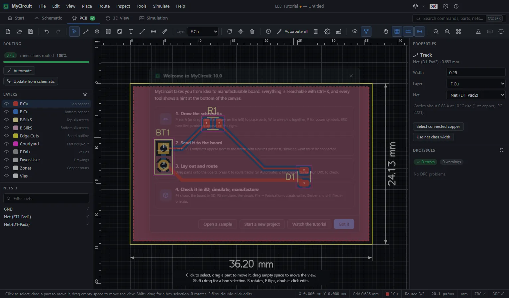
If the previous session ended with unsaved work (and autosave is on), the Recover work dialog asks “An unsaved project from … was recovered. Restore it?” — Restore opens it marked as modified, Discard deletes the copy (2.12).
2The user interface
2.1Overview
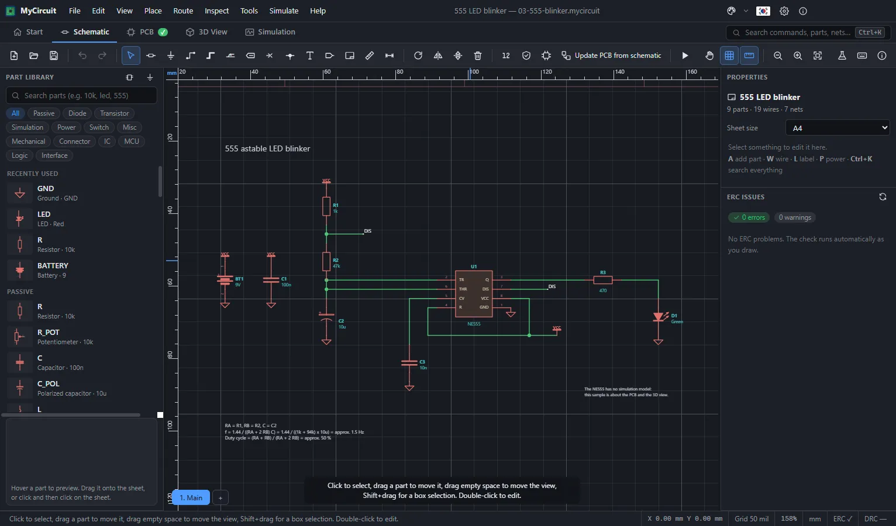
| Where | Area | Contents |
|---|---|---|
| Top row | Title bar | Logo, menu bar (File, Edit, View, Place, Route, Inspect, Tools, Simulate, Help), document title, and on the right the palette (random theme) and ▾ (theme list), the language flag, Settings and About. Drag it to move the window (desktop). |
| Second row | Document tabs | Start · Schematic · PCB · 3D View · Simulation, plus the command-palette search box on the right |
| Third row | Toolbar | Tools for the current tab; hover for name and shortcut. Tutorial, shortcuts and About sit at the far right. Toolbar buttons are never hidden (2.4). |
| Left | Left panel | Schematic: part library · PCB: routing progress, layers, nets · 3D: view options · Simulation: probes |
| Centre | Canvas | The editing area. A hint for the current tool floats at the bottom and fades after 7 seconds (it stays in the status bar). On the Schematic tab the page tabs sit at the bottom left (4.21). |
| Right | Right panel | Properties of the selection and the ERC/DRC issue list |
| Bottom | Status bar | Hint, cursor position, grid, zoom, active layer, routing progress, units, ERC/DRC |
Drag the splitters to resize the side panels (200–520 px, remembered). Ctrl+1 / Ctrl+2 toggle the left / right panel. The Start tab hides both; the Simulation tab hides the right one.
2.2Menus
Click a menu name to open it; while a menu is open, hovering another name switches to it. Shortcuts are shown on the right, unavailable items are greyed out, ticked items are toggles.
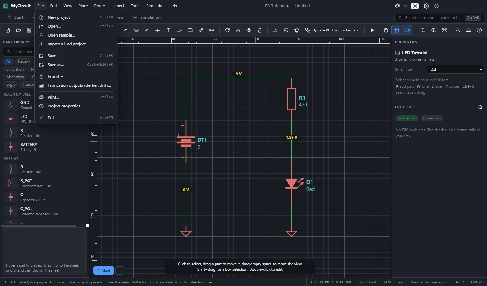
| Menu | Items |
|---|---|
| New project (Ctrl+N) · Open… (Ctrl+O) · Open sample… · Open recent ▸ · Import KiCad project… (13.9) · Save (Ctrl+S) · Save as… (Ctrl+Shift+S) · Export ▸ · Fabrication outputs (Gerber, drill)… · Print… (Ctrl+P) · Project properties… · Exit | |
| Undo · Redo · Undo history… · Cut / Copy / Paste (schematic only) · Duplicate (Ctrl+D) · Delete · Select all · Find… (Ctrl+F) · Rotate (R) · Mirror horizontally (Y) · Mirror vertically (X) · Flip to other side (F, PCB) | |
| Start page · Schematic editor (F2) · PCB editor (F3) · 3D viewer (F4) · Simulation (F6) · Zoom in / out / to fit · Pan (hand) · Show grid · Show rulers · Show board size · Show library / layers panel · Show inspector panel · Show ratsnest · High-contrast layers (H) · Show simulation voltages on schematic | |
| Add part (A) · Power port (P) · Wire (W) · Bus (B) · Net label (L) · Global label (Ctrl+L) · Hierarchical label (H) · Hierarchical sheet (S) · No-connect flag (Q) · Junction (J) · Text (T) · Measure (M) · Dimension (D) — switches to the Schematic tab | |
| Route track (X) · Via (V) · Copper zone (Z) · Board outline (O) · Text (T) · Graphic line (G) · Dimension (D) · Measure (M) · Autoroute all (Ctrl+Shift+A) · Autoroute highlighted net · Route differential pair… · Length tuning… · Routing: highlight collisions / push and shove / stop at obstacles (one is ticked) · Fill board with ground zone · Arrange footprints on board · Clean up tracks · Remove all tracks and vias — switches to the PCB tab | |
| Electrical rules check (ERC) · Design rules check (DRC) · Net list… · Net length report… | |
| Annotate schematic · Re-annotate all parts · Assign footprints… · Update PCB from schematic (F8) · Board setup… · Symbol editor… · Footprint wizard… · Bill of materials… · Gerber viewer… · Calculators… · Settings… (Ctrl+,) | |
| Run simulation (F5) · Operating point (DC) · Transient analysis · AC analysis (Bode) · DC sweep · Show SPICE netlist… · Clear simulation overlay | |
| Interactive tutorial · User manual (F1) · Keyboard shortcuts (Ctrl+/) · Quick tour · About MyCircuit |
opens a searchable list: schematic as SVG / PNG, PCB as SVG, netlist (KiCad), SPICE netlist, BOM (CSV), pick & place (CSV), fabrication outputs, 3D model (STL / GLB) — see chapter 13.
2.3Document tabs and badges
| Tab | Key | Badge |
|---|---|---|
| Start | — | — |
| Schematic | F2 | red = ERC errors; yellow = ERC warnings (when no errors) |
| PCB | F3 | red = DRC errors; yellow = unrouted connections; green ✓ = fully routed |
| 3D View | F4 | — |
| Simulation | F6 | — |
Switching tabs while drawing a wire or routing a track finishes it where it is.
2.4Toolbar
New/Open/Save and Undo/Redo are always on the left, the shortcut sheet on the far right. In between:
| Tab | Buttons |
|---|---|
| Start | Open sample · Schematic editor · PCB editor · User manual |
| Schematic | Select · Add part · Power port · Wire · Bus · Net label · Global label · No-connect · Junction · Text · Hierarchical label · Hierarchical sheet · Measure · Dimension | Rotate · Mirror H · Mirror V · Delete | Annotate · ERC · Assign footprints · Update PCB from schematic | Run simulation | (right) Pan (hand) · Show grid · Show rulers | Zoom out · Zoom in · Fit |
| PCB | Select · Route · Via · Zone · Outline · Text · Line · Dimension · Measure | Layer selector | Rotate · Flip · Delete | DRC · Autoroute all · Ground pour · Board setup · Fabrication outputs | High contrast · Ratsnest | (right) Pan (hand) · Show grid · Show rulers · Show board size | Zoom |
| 3D View | Rotate / Pan (P) navigation mode | Isometric · Top · Bottom · Front · Back · Left · Right | Components · Silkscreen · Solder mask · Copper zones · X-ray toggles | Grid (G) · Axes (A) · Orientation gizmo · Board dimensions · cm/inch unit button · Zoom to fit | Screenshot (PNG) · Export 3D | PCB editor |
| Simulation | Run simulation | Operating point · Transient · AC · DC sweep | Show SPICE netlist · Export SPICE | Schematic editor · Clear overlay |
Toolbar buttons are never hidden. The window's minimum width follows the widest toolbar (desktop), so the window cannot be made narrow enough to cut buttons off. On a screen narrower than the toolbar, the buttons with text labels (e.g. Update PCB from schematic, Autoroute all) collapse to icons — the tooltip still gives name and shortcut. If even that does not fit, the toolbar wraps onto a second row. The same happens in the web version when the browser window is narrow.
2.5Left panel
- Schematic — Part library: search, category chips, recently used parts, grouped list and a preview (6.1).
- PCB: Routing (routed/total, progress bar, Autoroute and Update from schematic buttons), Layers (eye = show/hide, click = make active, high-contrast button), Nets (filter, unrouted count per net) — 7.3, 7.13.
- 3D: display options, board appearance, statistics — chapter 11.
- Simulation — Probes: voltages and currents to plot — 12.7.
2.6Right panel
Properties edits the selection directly: change a value and press Enter or click elsewhere; each change is one undo step. With nothing selected it shows the project (schematic: title, counts, sheet size; PCB: board size, layers, default track width, clearance, via size/drill, mask colour, finish). With several items selected it shows counts and Rotate/Mirror (or Flip)/Duplicate/Delete buttons; several tracks can get a new width at once.
Every numeric field is a stepper — board rules (default track width, clearance, via size/drill), footprint X/Y/rotation, track width, via diameter/drill, zone clearance/priority, text size and so on: − on the left, + on the right, the value centred. Each click changes the value by the field's step and is one undo step; hold a button to repeat. The value stays typeable: click it, type a number and press Enter (or click elsewhere).
Below is the ERC issues (schematic) or DRC issues (PCB) list with error/warning counts. Clicking an issue switches to its schematic page if needed, centres and zooms to it, selects the items involved and marks the spot with an expanding ring. The refresh button reruns the check. Up to 400 issues are listed.
2.7Status bar
| Cell | Meaning |
|---|---|
| Hint | How to use the current tool (“Ready” otherwise) |
| X / Y | Cursor position in mm or mil |
| Grid | Click for the grid menu — schematic 10/25/50/100 mil; PCB 0.05/0.1/0.127/0.25/0.5/0.635/1/1.27/2.54 mm |
| Zoom | % (schematic) or px/mm (PCB) |
| Active layer | PCB: colour chip and name |
| Routed | PCB: routed / total connections |
| Units | mm / mil — click to switch |
| Simulation overlay on | Schematic: operating-point voltages are shown |
| ERC ✓ / ✖ n, DRC — / ✓ / ✖ n | Error counts (— = DRC not run yet); click to run the check |
2.8Command palette and Find
Ctrl+K (or the search box on the tab bar) opens the command palette: every command, every schematic part (reference, value, symbol, footprint) and every net in one list. Several words must all match; names starting with your first word rank first. ↑/↓, Enter, Esc. Picking a part selects and centres it (on the board when the PCB tab is active), picking a net highlights it in schematic and PCB.
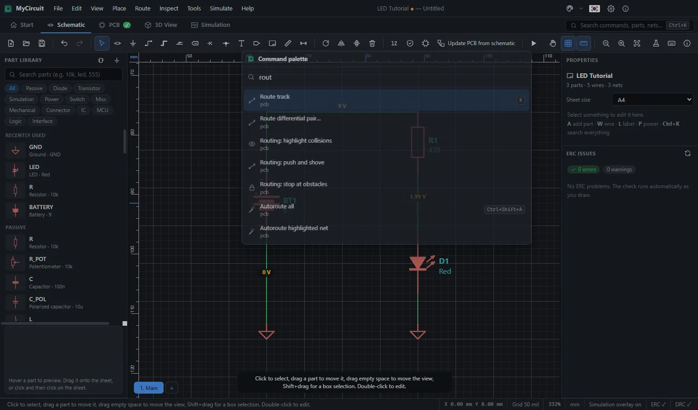
Ctrl+F () searches parts, net labels, texts and nets (showing the pins of each net).
2.9Zooming and panning
The schematic and PCB canvases navigate the same way. By default left-dragging empty canvas pans the view and box selection needs Shift (or Ctrl). Dragging a part or wire moves that item.
| Action | How |
|---|---|
| Pan | Left-drag on empty canvas (default), middle-drag, right-drag, Space+left-drag, Shift+wheel (horizontal), two-finger drag — middle, right and Space drags always pan, whatever the tool. |
| Box selection | Shift+drag or Ctrl+drag (left → right = window, right → left = crossing, 4.2). Settings → Units & grid → Left-drag on empty canvas = Box select restores box selection on a plain drag. |
| Hand (pan) tool | The hand button on the right of the toolbar, Pan (hand): left-drag moves the view (). While on, a left-drag pans even over items. Esc or the button leaves it. |
| Zoom | Wheel (about the cursor), Ctrl+wheel / trackpad pinch, Ctrl+= / Ctrl+-, toolbar, two-finger pinch. The step per wheel notch is Settings → Units & grid → Wheel zoom speed (× 0.5 … × 3). |
| Fit | Home — schematic content (or the whole sheet), board plus all footprints |
| Context menu | Right-click without moving |
Grid and rulers: 2.13.
2.10Theme and language
- Palette button (Random theme): applies one of the 40 themes at random and names it.
- ▾ button (Choose a theme): opens the list of 20 dark, 20 light and your custom themes (2.14).
- Flag button: shows the UK flag while the UI is Korean and the Korean flag while it is English; click it to switch.
The change applies immediately to menus, dialogs, editors, 3D and plots and is saved. On desktop the window caption buttons follow the theme.
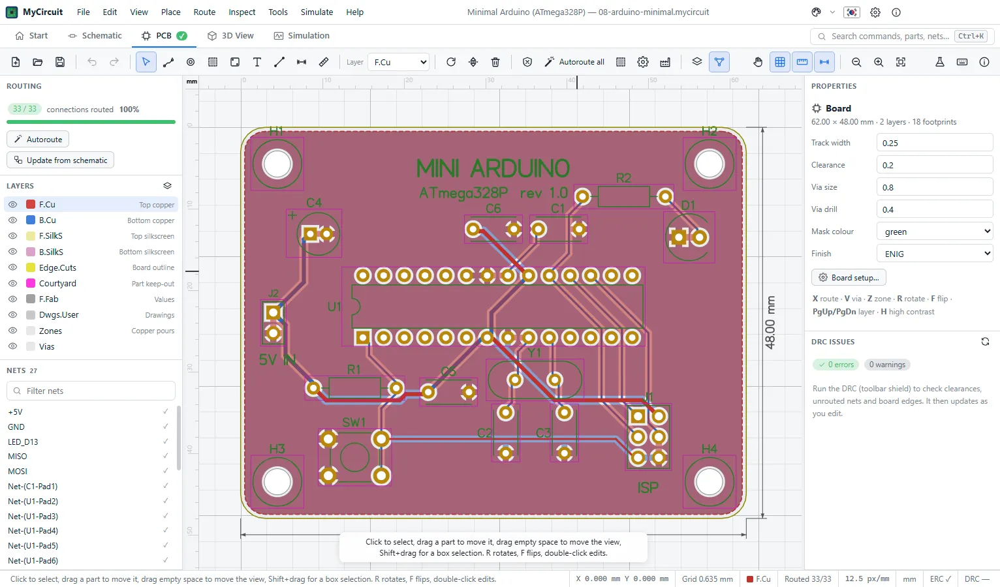
ERC/DRC messages follow the language too: the checkers produce English sentences, and in the Korean UI they are rewritten in Korean. The small grey code under each message (e.g. track_width · B.Cu) is language-independent and listed in 5.4 and 9.2.
2.11Start page
Quick actions (New project, Open project…, Browse samples, User manual, Keyboard shortcuts), recent projects (up to 8, desktop), a tip of the day and sample cards with a live schematic thumbnail, title, description and tags. Click a card to open the sample.
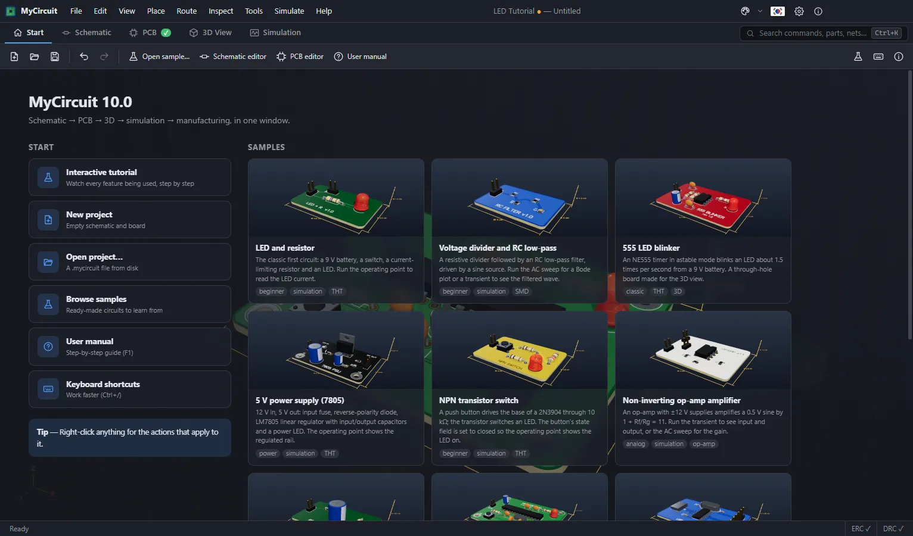
2.12Files, undo and autosave
- New project: an “Untitled” project with an empty A4 schematic (one page “Main”), a 60 × 40 mm two-layer board and default rules; opens the Schematic tab.
- Open: opens a
.mycircuitfile and shows the Schematic tab (or PCB if the schematic is empty). Dropping a.mycircuit/.jsonfile on the window, double-clicking it in the file manager, or passing it on the command line also work. - Save overwrites the known path without a dialog; the first save suggests the project title as file name. Save as is Ctrl+Shift+S. Opened samples have no path, so the first save asks for a new name.
- A ● next to the title means unsaved changes; New/Open/Open sample/closing ask Cancel / Don't save / Save.
- Undo: every edit is an undo step (up to 200). One drag, one wire, one dialog OK = one step. A short toast says what was undone. lists the steps; click one to go back to before it. Opening a file clears the history.
- Autosave (on by default): every 30 s while there are unsaved changes, a separate recovery copy of the whole project is stored (your file is not overwritten). Saving or New clears it; after a crash the next start offers to restore it.
There is only one recovery copy. Choosing Discard in the recovery prompt deletes it for good.
2.13Grid and rulers
The default grid is a 5 × 5 line grid: thin lines per cell and a bold major line every 5 cells. When you zoom, the displayed cell re-spaces by ×5 so a cell is always 10–50 px on screen, and the 5×5 pattern keeps an even spacing at every zoom (snapping still uses the schematic/PCB grid setting). Toggle it with the Show grid toolbar button or ; choose Lines (5 × 5) or Dots under Settings → Units & grid → Grid style.
Rulers run along the top and left canvas edges in the editor unit (mm or mil, shown in the corner), with an orange marker for the cursor; the label step follows 1-2-5 as you zoom. Toggle with Show rulers (toolbar, View menu, or Settings → Show rulers on the canvas edges).
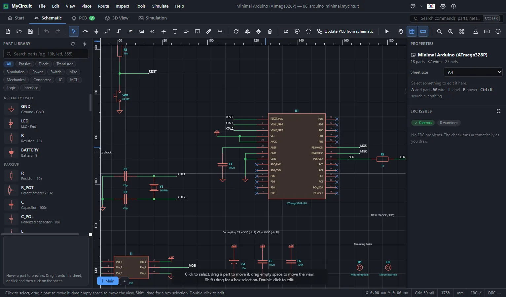
2.14Themes
20 dark themes (Midnight, Graphite, Nord, Dracula, Monokai, Solarized Dark, Gruvbox Dark, One Dark, Tokyo Night, Catppuccin Mocha, Oceanic, Forest, Crimson, Amethyst, Cyberpunk, Slate, Espresso, Deep Sea, Aurora, High Contrast Dark) and 20 light themes (Daylight, Paper, Solarized Light, Gruvbox Light, Nord Light, GitHub Light …). A theme names only a few key colours; all other UI colours and the schematic/PCB canvas palettes are derived from them, so every theme stays readable.
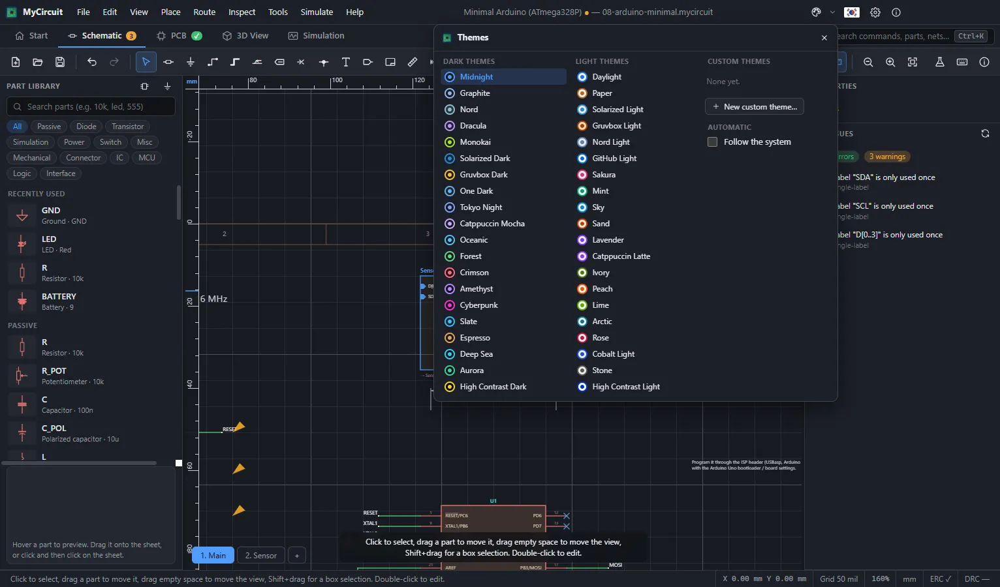
- Click a name to apply it; the current theme is highlighted.
- Follow the system (under Automatic) switches between the last dark and light themes you picked, following the OS setting.
- New custom theme…: name, type (dark/light) and four colours — accent, background, panels, text — previewed live on the whole program; Save theme adds it under Custom themes (× deletes it). Custom themes are stored in the settings file.
- Settings → Appearance → Themes… opens a gallery with swatches of all themes.
2.15About window
(or the ⓘ buttons) shows the program icon on the left — a straight top-down view of a circuit board — and a detailed description on the right: the tagline “Electronic circuit design and 3D tool” and four feature lines (schematic, PCB, 3D and simulation, output). Below are category/value rows: Program, Build (commit · branch, “(+)” when modified), Build date, Author (SHKWON (knix008@naver.com)), Edition, Operating system, Runtime (Electron · Chromium · Node.js), 3D engine (three.js), Library (symbol/footprint counts), File format, Language / theme, License. Copy information copies the rows.
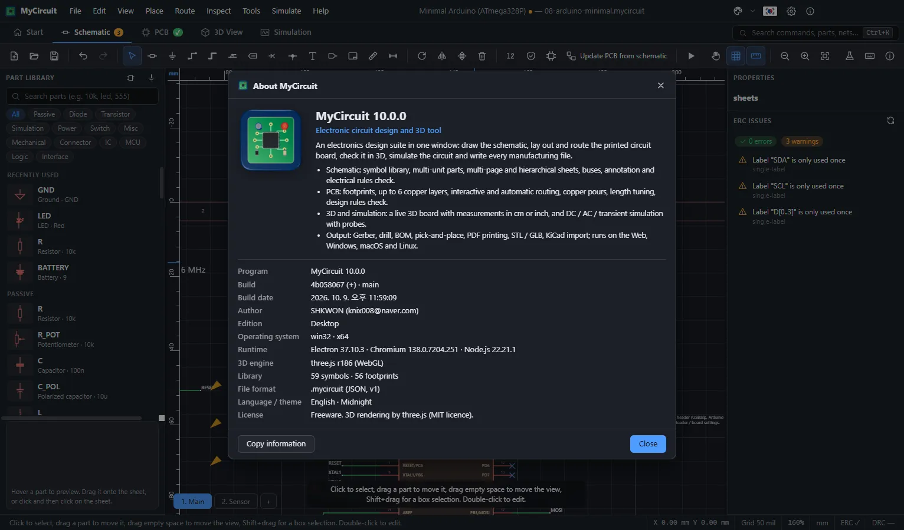
2.16Interactive tutorial
(flask button on the right of the toolbar) opens a guide at the bottom right that drives the real program. It replaces the open project, so unsaved work is offered for saving first.
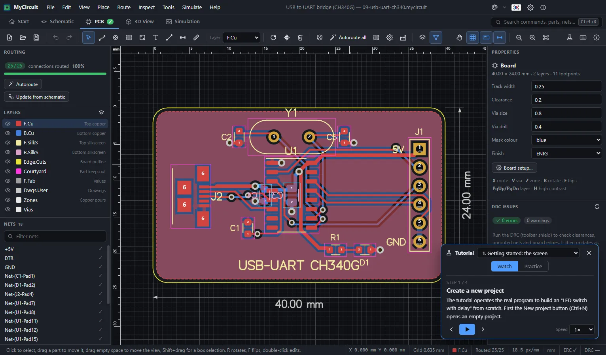
- Watch: the program performs every step — an animated cursor moves to toolbar buttons, library rows, canvas points and dialog buttons and really clicks and types. ▶ Play / Pause, ‹ previous step, › run next step, speed 0.5×–4×.
- Practice: do each step yourself; it is checked automatically and the tour moves on. Show me performs the step for you.
- 14 lessons with 62 steps in total: Getting started: the screen · Schematic: placing parts · Schematic: wires and labels · Schematic: editing · Multi-page schematics · Annotation and ERC · Footprints and sending to the PCB · PCB: board and placement · PCB: routing · PCB: silkscreen, dimensions, measuring · 3D view · Simulation · Manufacturing outputs and printing · Making library parts and tools — including the steps “Moving around: hand, grid and rulers”, “Measuring and dimensions”, “3D: rotate, pan, grid and axes” and “Advanced routing: length tuning, pairs, push and shove” (opens the Length tuning and Route differential pair dialogs and switches the routing mode).
- When all lessons are finished the project you built stays open. × ends the tutorial.
3Quick-start tutorial — an LED circuit from scratch
We build the simplest circuit — a 9 V battery, a 470 Ω resistor and a red LED — from schematic to Gerber files. Every picture is a real screenshot.
3.1Create a project
- (Ctrl+N). The Schematic tab opens with an empty A4 sheet.
- : set the title to
LED Tutorial. The title appears in the title block, export file names and manufacturing files.
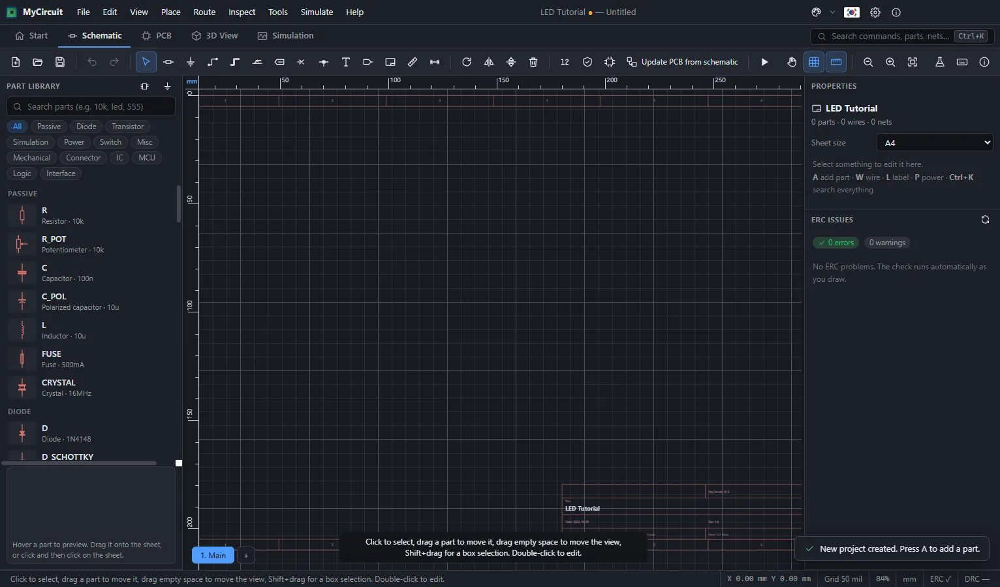
Manufacturing file names keep only letters, digits and _ . -; a title without Latin letters becomes board.
3.2Place the parts
- Press A, type
battery, press Enter: a ghost follows the mouse. Click to place it. - Place
Randledthe same way. While placing, R rotates by 90° and Y/X mirror. The tool stays active so you can place several; Esc or right-click stops. Shift+click places one and returns to Select. - Press P, choose
GND, place one under the battery and one under the LED. - Double-click a value to edit it: battery
9, resistor470, LEDRed.
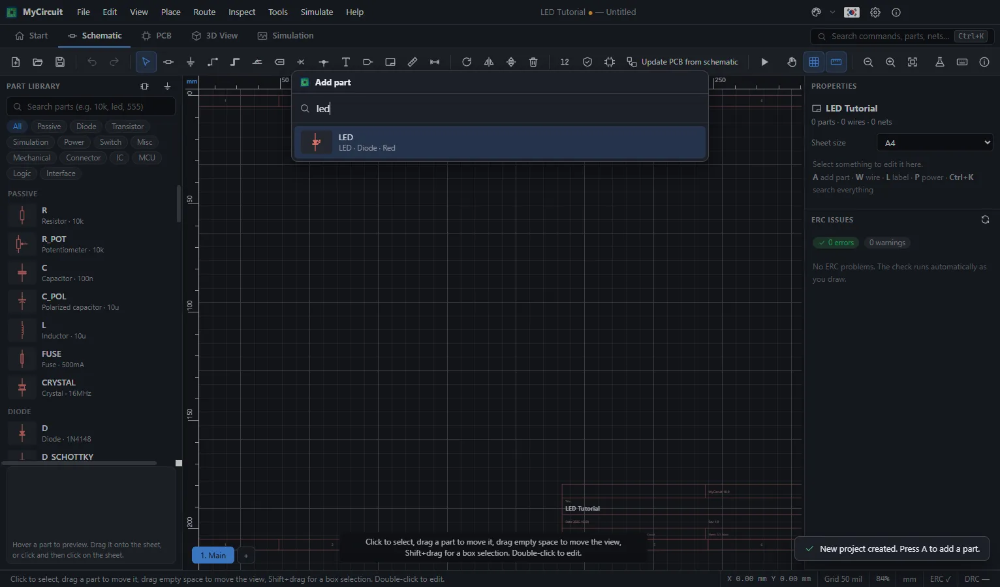
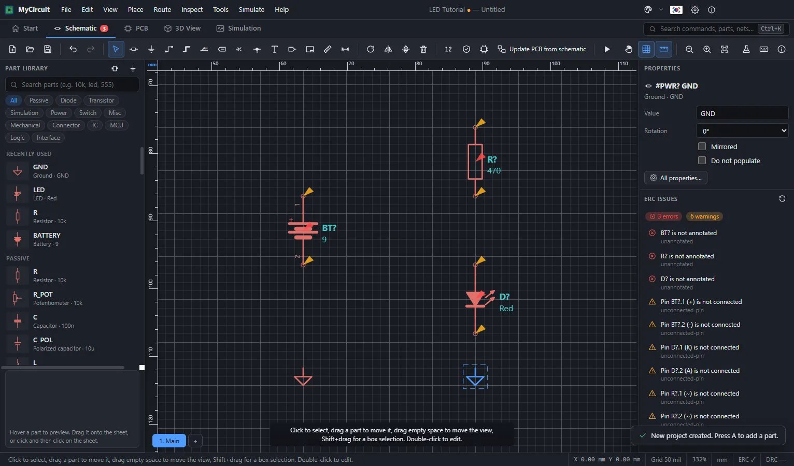
BT?, R?, D?You can also drag a part from the library onto the sheet, or click it in the list and then click the sheet. Small circles on pin tips mark unconnected pins.
3.3Wire it
- Press W and click the battery's + pin tip. The cursor snaps to pins and wire ends (small square marker).
- Click once above it for a corner, then click the resistor's top pin. Reaching a pin ends the wire automatically. The dashed line previews the next segment; / toggles horizontal-first / vertical-first.
- Wire resistor → LED anode, LED cathode → GND and battery − → GND the same way.
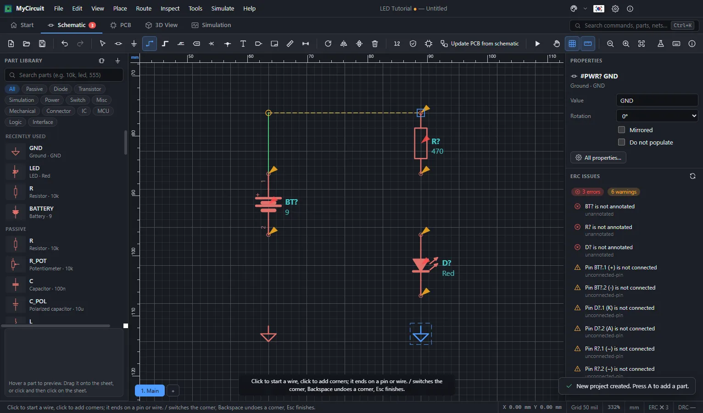
While wiring, Backspace removes the last corner; Enter, Esc, double-click or right-click end the wire. Junction dots appear automatically where three or more connections meet.
3.4Annotate and run ERC
ERC runs while you draw. Right now it reports “BT? is not annotated” etc., the Schematic tab shows a red badge and small red flags mark the problems.
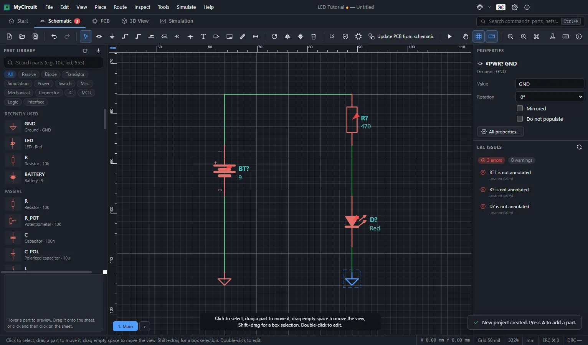
- Click Annotate schematic on the toolbar: the parts become
BT1,R1,D1(top to bottom, left to right). - Click the ERC button or the ERC cell in the status bar: “ERC passed — no problems found.”
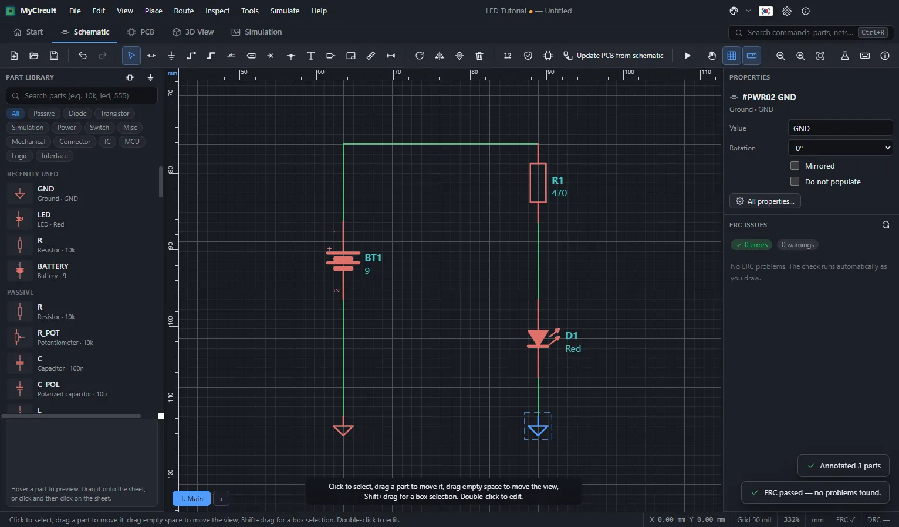
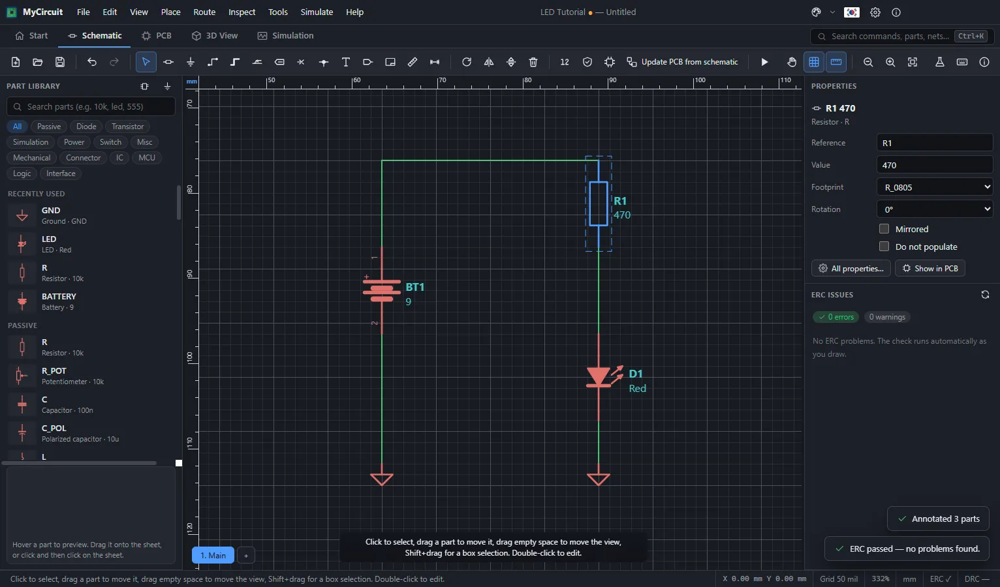
3.5Assign footprints
Library symbols come with a default footprint (R_0805, LED_0805). For hand soldering we switch to through-hole parts.
- Click Assign footprints on the toolbar ().
- Click
R1on the left andR_Axial_P7.62mmon the right; setD1toLED_D5.0mm. ★ marks the symbol's suggestions; hovering previews the pads. - Apply. (Use first suggestion for empty ones fills all empty parts at once.)
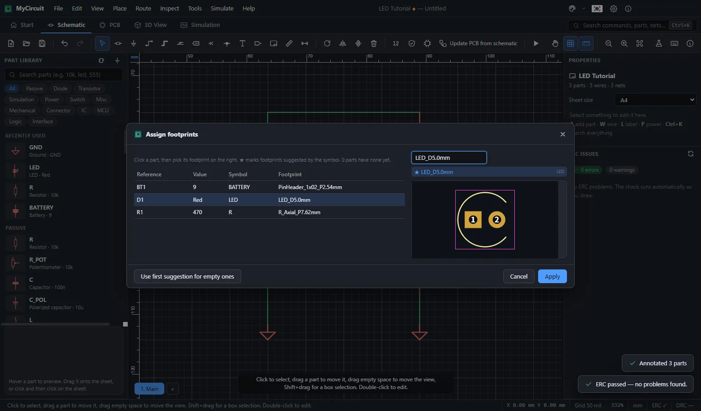
3.6Update the PCB
Press F8 (Update PCB from schematic). The PCB tab opens and the footprints appear in a column to the right of the board outline, joined by thin airwires (the ratsnest) that show what must be connected. A toast says “PCB updated — 3 added”.
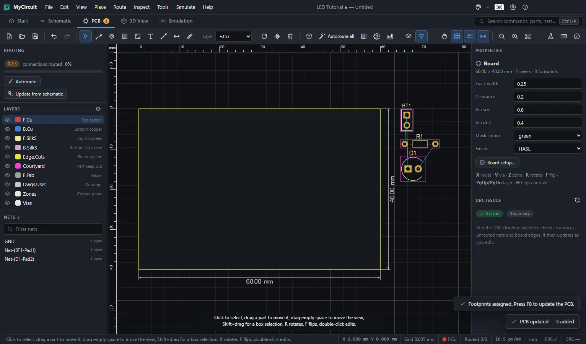
3.7Board outline and placement
- Press O and drag a rectangle: its size is shown while dragging and the outline is replaced when you release.
- Esc, then drag each footprint onto the board; its origin snaps to the grid (0.635 mm by default).
- Select the LED and press R to rotate it. Short, uncrossed airwires make routing easy.
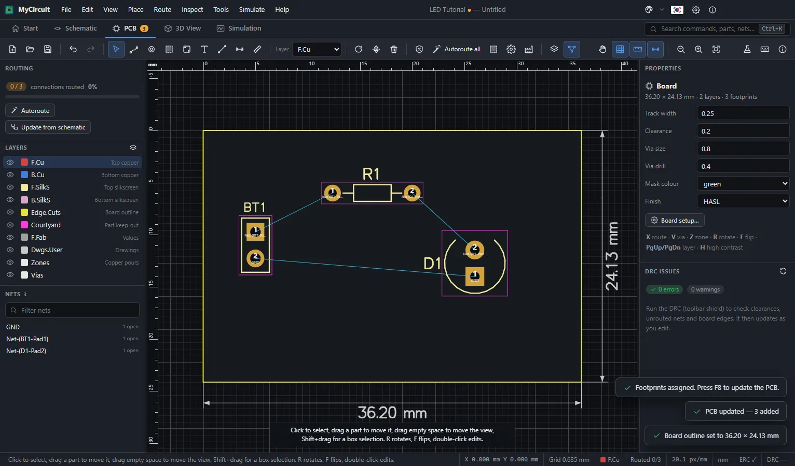
3.8Route — by hand and automatically
- Press X and click pad 1 of BT1. The hint reads “Routing net Net-(BT1-Pad1) — width 0.25 mm”.
- Move the mouse: a straight + 45° preview follows, with a faint clearance halo. It turns red when it would come too close to other copper.
- Click pad 1 of R1: reaching same-net copper ends the route.
- Click Autoroute all (Ctrl+Shift+A): “All connections routed (7 tracks, 0 vias) in 37 ms.” The PCB badge turns into a green ✓.
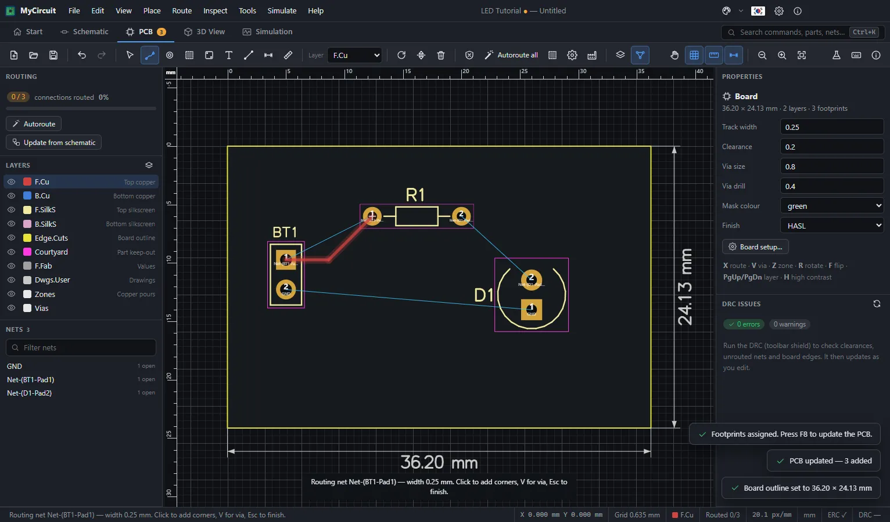
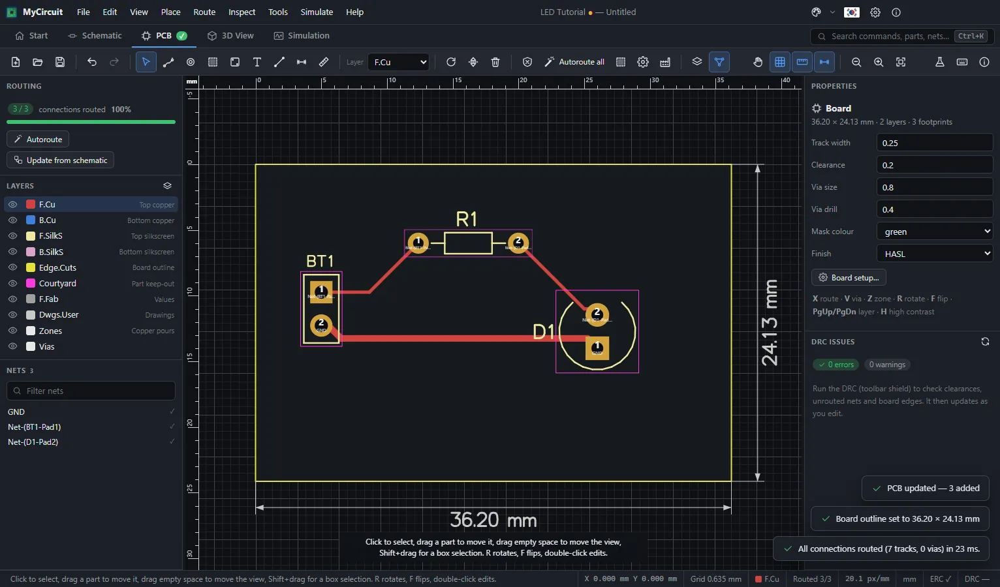
The GND track is wider because the default “Power” net class (GND, VCC, +5V, +3V3, +12V, -12V, VBAT) uses 0.5 mm tracks (10.5).
3.9Ground pour
- Click Fill board with ground zone ().
- GND is preselected with F.Cu and B.Cu ticked; click Create.
- Both sides get a GND zone inset from the board edge by (edge clearance + 0.2 mm). Other nets are cleared around; GND pads connect through four-spoke thermal reliefs.
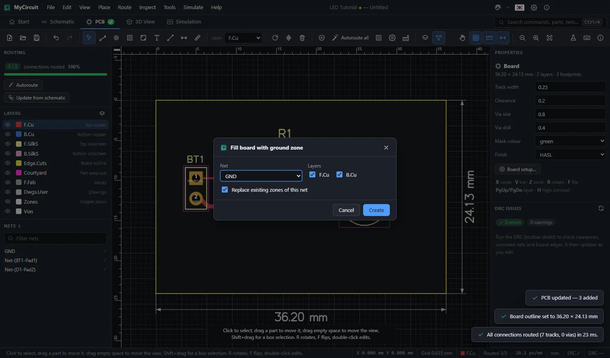
3.10DRC
Click the shield-shaped DRC button: “DRC passed — the board is clean.” If there were problems, clicking an issue jumps to it. Once run, DRC reruns after every edit (9.1).
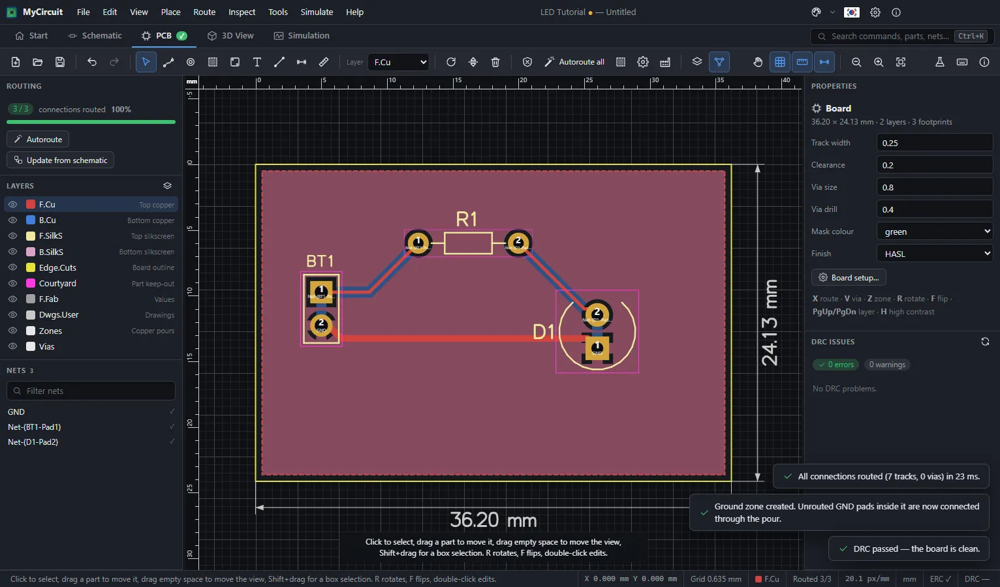
3.11Check it in 3D
F4 shows the board in an isometric view. Left-drag orbits, right-drag pans, the wheel zooms; 1–7 pick standard views and C toggles components. Clicking a part selects it everywhere.
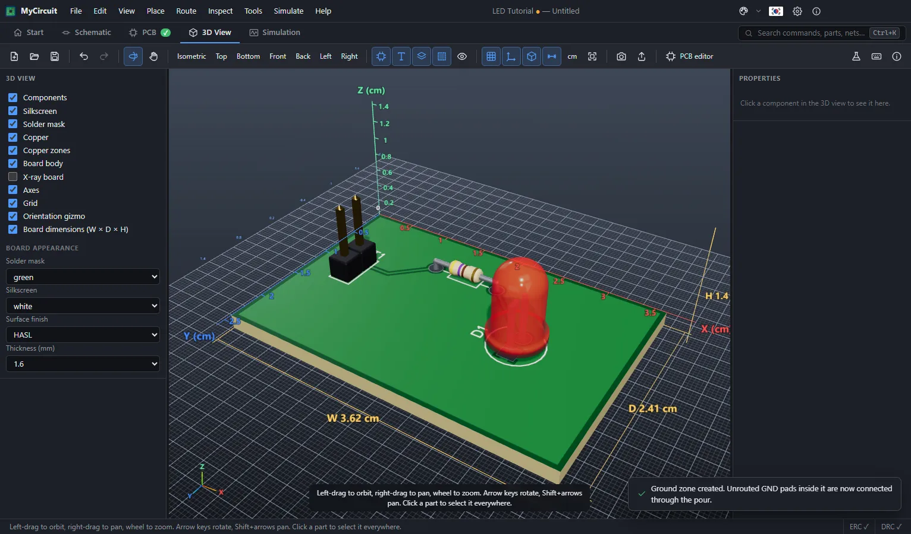
3.12Simulate
- : the Simulation tab shows net voltages and part currents/powers. The LED current is about 14.9 mA.
- F2 back to the schematic: voltage badges (9 V, 1.99 V, 0 V) sit on the wires.
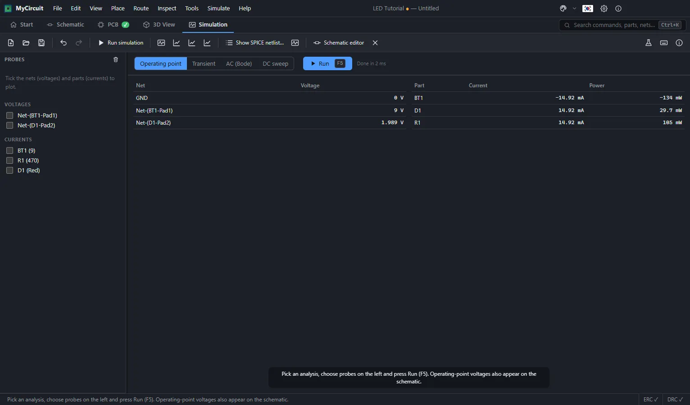
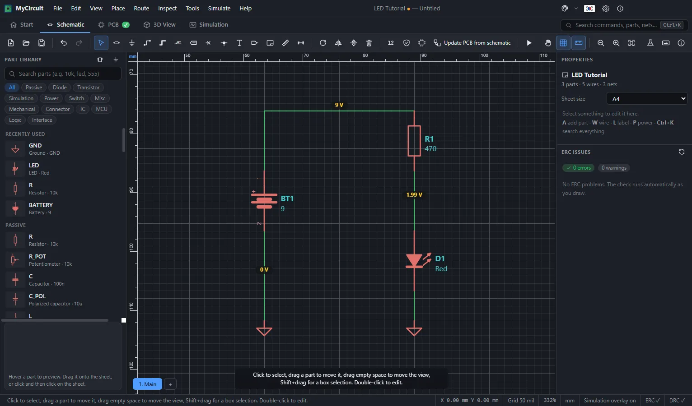
The battery current is negative (−14.9 mA) by SPICE convention: a source's current is measured flowing into its + pin, so a source that delivers power reads negative (12.6).
3.13Gerber and drill files
- . DRC runs first and its result is shown on top.
- Check the file list (one Gerber per layer, PTH/NPTH drill, BOM, pick & place, IPC-356, job file, README) and sizes.
- Preview in Gerber viewer, or Save ZIP… to get
LED_Tutorial-fabrication.zip— upload it to your board house as is.
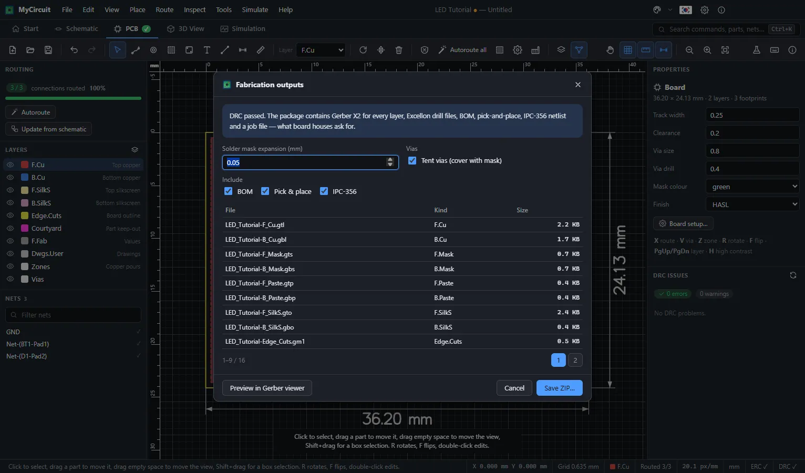
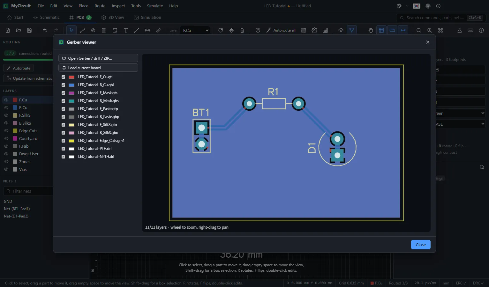
Save with Ctrl+S — done. The following chapters cover every feature in detail.
4Schematic editor
The Schematic tab (F2) defines what connects to what (the netlist). The board, the simulation and the BOM all start from here.
4.1Units, grid and sheet
- Schematic coordinates are mils (1/1000 inch). The status bar shows them in mm or mil.
- Everything snaps to the schematic grid (50 mil by default; 10/25/50/100 via the status bar or Settings). Library pins are on a 100 mil pitch, so 50 mil is the right choice almost always.
- The sheet has a border with column numbers and row letters. Choose A4 · A3 · A2 · Letter · Tabloid under Sheet size in the Properties panel with nothing selected.
- The title block shows company, title, date, revision, comment, size, author and “Sheet: page/pages name”, edited in .
- Grid display and style (dots/lines) are under and Settings.
4.2Selecting
- Click selects one item (hover highlights it). Overlapping items are picked in the order labels/texts → no-connects → junctions → wires → buses → parts.
- Shift/Ctrl+click adds or removes.
- Box selection: Shift (or Ctrl) + drag on empty space (adds to the selection):
- Left → right (window, blue solid box): only items completely inside (wires: both ends).
- Right → left (crossing, green dashed box): everything the box touches (wires: either end).
- Ctrl+A selects everything on the current page.
- Esc in order: leaves hand mode, clears a measurement, finishes a wire, cancels a drag, returns to Select, clears the net highlight, clears the selection.
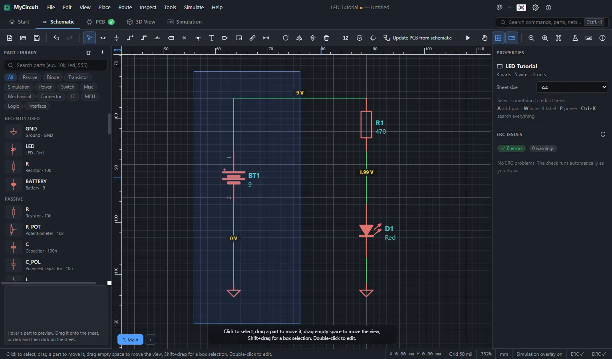
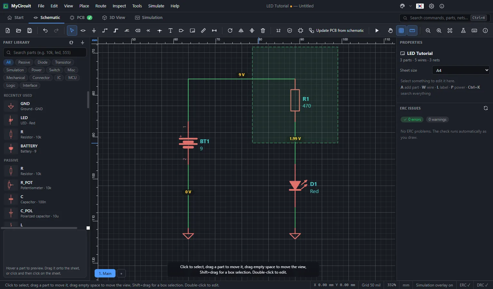
4.3Moving and rubber-band dragging
- Drag a selection to move it on the grid (it starts after 4 px of movement); one drag is one undo step. Esc during a drag puts everything back.
- Rubber-banding: wire ends attached to the pins or label anchors of moved items follow. Wires that became diagonal get a corner on release so they stay orthogonal (an originally horizontal wire stays horizontal).
- Alt/Option+drag moves without dragging attached wires (connections may break).
- Arrow keys nudge by one grid step (with rubber-banding).
- Field dragging: drag just the reference (R1) or value (10k) text of a part to reposition the label. Rotating/mirroring the part resets field positions.
4.4Rotate and mirror
| Key | Action |
|---|---|
| R | Rotate 90° counter-clockwise (on screen); several items rotate about the grid-snapped centre of the selection |
| Y | Mirror horizontally (about a vertical axis) |
| X | Mirror vertically (mirror + 180°) |
Attached wire ends follow the new pin positions and are straightened. The keys also work on the ghost while placing. The inspector's Rotation (0/90/180/270°) and Mirrored box do the same.
4.5Copy, cut, paste, duplicate
- Ctrl+C / Ctrl+X / Ctrl+V use an internal clipboard. Paste centres the items at the mouse position (grid-snapped); Paste on the empty-space context menu pastes where you clicked. You can paste onto another page.
- Ctrl+D duplicates 200 mil down-right and selects the copy.
- Pasted parts whose reference is already used become
R?— annotate again. - Cut/copy/paste exist only in the schematic; on the PCB, Duplicate works on tracks, vias, zones, texts and graphics (footprints come from the schematic).
4.6Deleting
Del or Backspace (when not wiring). Afterwards the automatic clean-up removes junctions no longer needed and merges wires that now continue in a straight line.
4.7Placing parts
- A (): type a name, value or keyword (English or Korean, e.g. “resistor”, “555”) and press Enter. Recently used parts are listed first.
- Drag a part from the library onto the sheet: places one and returns to Select.
- Click a part in the library, then click the sheet (Enter in the search box picks the first hit).
Each click places one copy and the tool stays active; Shift+click places once and returns to Select (power ports stay active). New parts get R?-style references and the library's default value and footprint. Placed symbols go into the recently-used list (12).
4.8Power ports
P lists the power symbols: GND, VCC, +5V, +3V3, +12V, VBAT, -12V, PWR_FLAG.
- A power symbol joins the net named by its value; all symbols with the same name are one net — without wires and across all pages.
- Changing the value renames the net (e.g. VCC →
+9V). - They get hidden references (
#PWR01…) and never appear on the board or in the BOM. PWR_FLAGtells ERC that a net is powered from outside; use it to silencepower-undrivenwhen power comes in through a connector.- The simulation reference (0 V) is the
GND(or0,AGND) net — simulation needs a GND symbol.
4.9Wires
- W, then click the start. Near a pin tip, wire end or label anchor (about 9 screen pixels) the point snaps there (square marker); otherwise to the grid (cross marker).
- Each further click adds a segment. Non-aligned points get one corner, horizontal first by default; / switches to vertical first.
- Auto-finish: touching a pin, another wire's end, a label or the middle of another wire ends the wire.
- To end elsewhere: Enter, Esc, double-click or right-click. Backspace removes the last segment.
A whole wire is one undo step. After every edit the clean-up runs: removes zero-length and duplicate wires, merges collinear wires meeting end to end (when nothing else attaches there), splits wires at junctions on their middle, and keeps junction dots exactly where three or more connections meet (adding and removing them automatically).
Unconnected wire ends get a small yellow circle; unconnected pin tips get a small circle when zoomed in.
Two wires that merely cross are not connected — place a junction (J). A wire end or pin tip landing on the middle of a wire (a T) does connect (5.1).
4.10Junctions
J and click: the junction splits wires passing through and connects them. Junctions where fewer than three connections meet are removed by the clean-up.
4.11Net labels and global labels
- L (net label) or Ctrl+L (global label), click a wire end or pin tip, type the name, Enter (Esc cancels).
- Auto-increment: if the previous name ended in a number the next label is pre-filled with it plus one (
D0→D1,ADDR07→ADDR08). - Auto direction: on a wire end the label points away from the wire.
- Equal net labels connect on the same page. Global labels with the same name connect across all pages (and also join a same-named net label on their own page).
- Double-click to rename; the inspector edits name, type and rotation.
- Labels also name nets: a labelled net is called by its label instead of
Net-(R1-Pad2), and that name is used on the board, in probes and netlists.
4.12Buses
B, click corners, double-click to finish. A bus is a thick graphic line only — the connections come from the net labels on each signal (see sample “74HC595 LED bar”).
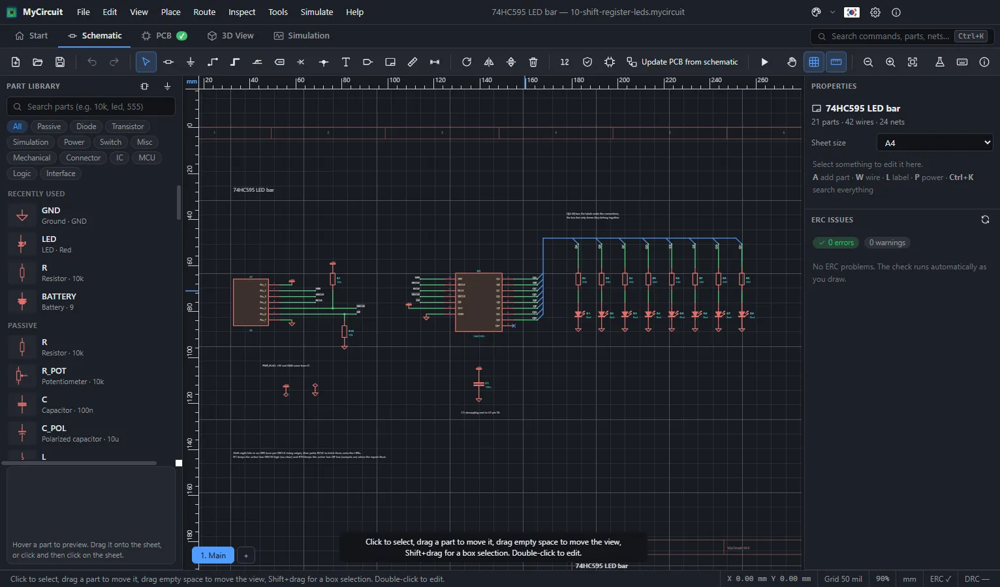
4.13No-connect flags
Q and click an unused pin tip: an × marks it as intentionally unconnected and the unconnected-pin warning disappears. Clicking elsewhere shows “Click on a pin end to place a no-connect flag.” Connecting a flagged pin later raises nc-connected.
4.14Text
T, click, type. Notes have no electrical meaning. Double-click to edit inline; the inspector edits multi-line text and size (mil, default 50).
4.15Editing properties
Inspector: for a part — Reference, Value, Footprint (symbol suggestions + More… = footprint assignment), Rotation, Mirrored, Do not populate, and a Simulation section for parts with simulation fields (wave = DC/Sine/Pulse, state = Open/Closed). Buttons: All properties…, Show in PCB. For a wire — net, length in mm, Highlight net, Add probe.
Part properties dialog (double-click, E, or right-click → Properties…):
- General: reference, value (with the parsed value shown, e.g. “= 4.7 k”), rotation, Mirrored / Do not populate / Hide value.
- Footprint: name with auto-complete, suggestion chips, pad preview.
- Fields: simulation fields and your own fields (
MPN,Supplier…) via Add field. Empty fields are not saved.
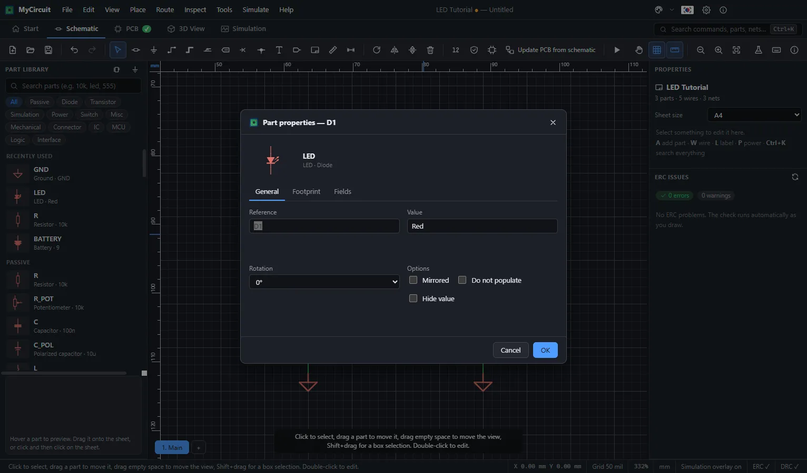
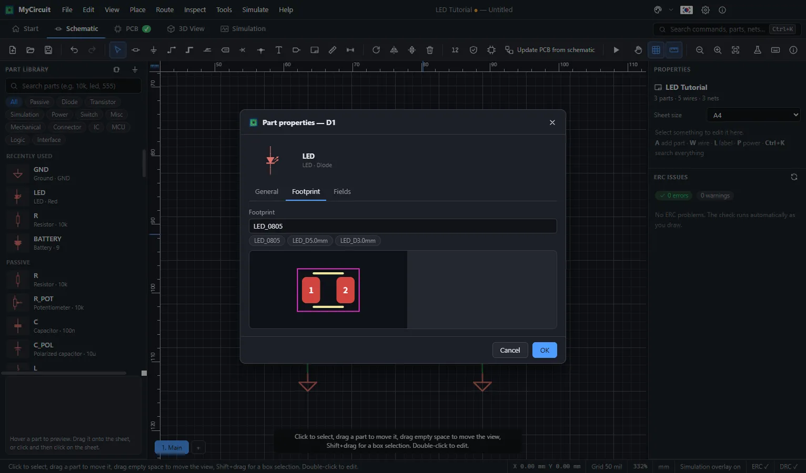
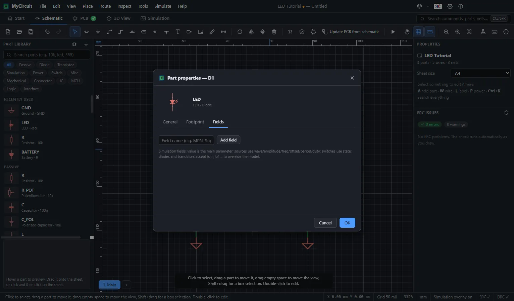
Double-clicking the value text of a part edits just the value in place; labels and texts are edited in place too. DNP parts are not added to the board, are excluded from simulation and are listed separately in the BOM.
4.16Annotation
- numbers only references ending in
?, per prefix, skipping numbers in use, ordered page by page (page order), then top to bottom (100 mil rows), then left to right. - renumbers everything.
- Power symbols and flags are always renumbered
#PWR01,#FLG01… - F8 annotates unannotated parts automatically first.
- The units of a multi-unit part share one reference and show a unit letter (U1A, U1B …; 4.25).
4.17Net highlight and cross-probing
- Clicking a wire highlights its whole net (wires, pins and same-named labels) in the schematic and on the board; also from the context menu, palette or Find. Esc clears it.
- Cross-probing: selecting a part selects its footprint on the PCB and in 3D and vice versa. Show in PCB / 3D / schematic switch tab and centre the part (switching schematic page if needed). Clicking a BOM row selects those parts everywhere.
4.18Context menu
Right-click with the Select tool: on a part — Properties…, Show in PCB, Show in 3D; on a wire — Highlight net, Probe this net in simulation; with a selection — Rotate, Mirror H/V, Duplicate, Copy, Cut, Delete; on empty space — Paste, Add part…, Wire; always — Zoom to fit, Select all. With other tools, right-click returns to Select (or ends the wire).
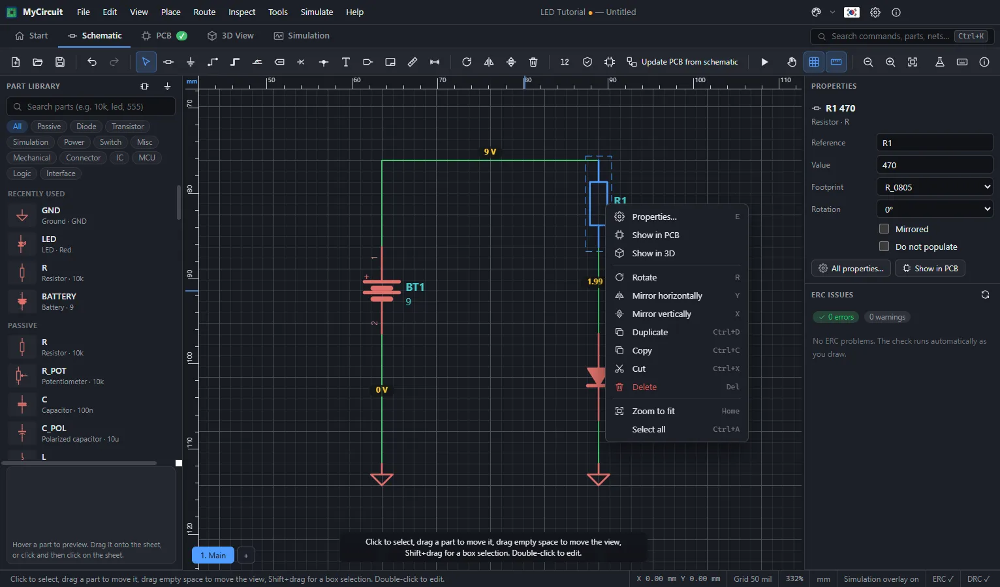
4.19Sheet size and title block
: title, author, company, revision, date, comment. Used by the title block, printouts, the fabrication README and job file, and the KiCad netlist title block.
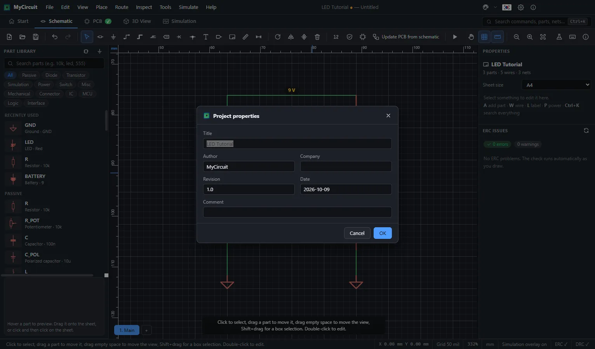
4.20Markers on the canvas
| Marker | Meaning |
|---|---|
| Small red/yellow flag | ERC error/warning |
| Yellow circle on a wire end | Dangling wire end |
| Small circle on a pin tip | Unconnected pin |
| Voltage badge on a wire | Operating-point result (toggle in View, clear in Simulate) |
| Expanding red ring | Location picked from the issue list or Find |
| Dashed rectangle | Selected part |
4.21Multi-page schematics
Large circuits can be split into pages. The page tabs are at the bottom left of the schematic canvas; a new project has one page, 1. Main.
| Action | How |
|---|---|
| Open a page | Click its tab |
| Add a page | The + tab — “Page N” is added and opened |
| Rename | Double-click the tab, or right-click → Rename page… |
| Reorder | Right-click → Move left / Move right |
| Delete | Right-click → Delete page (confirmed; removes everything on it; the last page cannot be deleted) |
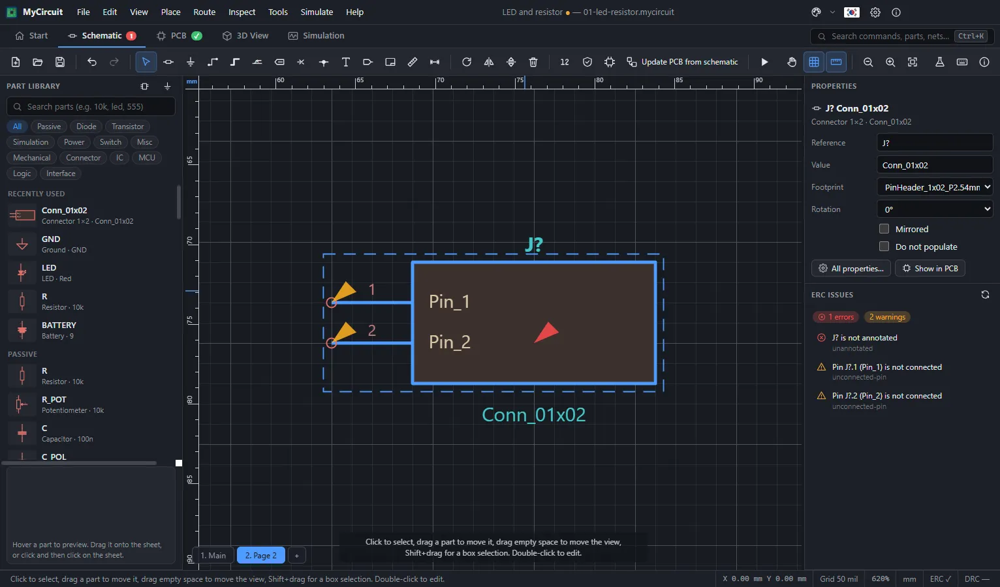
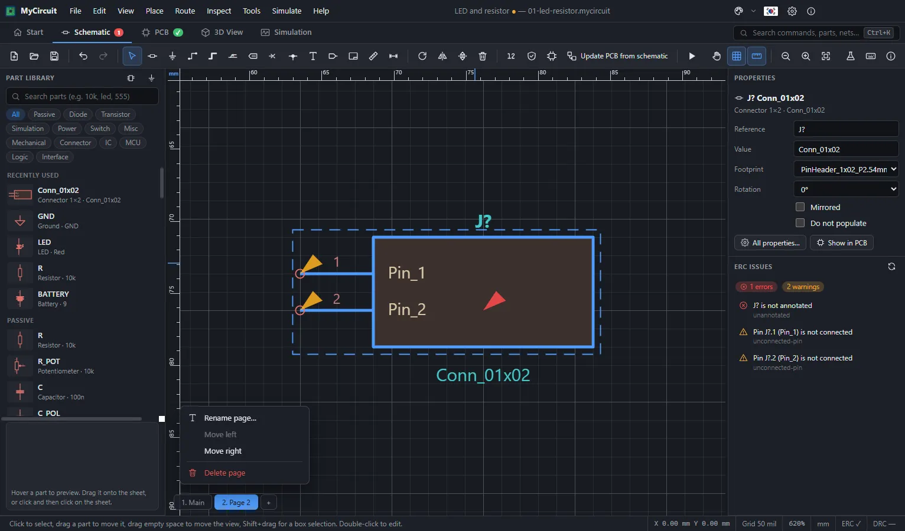
- Geometry never connects across pages — wires, pins and junctions only connect within their page.
- Net labels connect only on their own page; global labels and power ports connect across all pages. Adding a page shows a reminder.
- Editing (select all, move, paste …) works on the current page. ERC checks all pages; clicking an issue switches to its page; cross-probing jumps to the part's page.
- Printing outputs one sheet per page with “Sheet: i/N name” in the title block. SVG/PNG export writes the current page.
4.22Measure and dimensions
- Measure (M): click two points; a dashed line shows e.g. “28.40 mm (1118 mil) Δx 1000 Δy 500 mil”. Points snap to the grid. Click again for a new measurement, Esc clears. Not saved.
- Dimension (D): click, click, then move the mouse to set the offset (25 mil steps) and click — a dimension with extension lines, arrows and the length is added. The length shows both units: “12.70 mm (500 mil)” (or “500 mil (12.70 mm)” with mil units).
- Dimensions are saved per page in
schematic.dimensions, can be selected, moved and deleted, and appear in prints and SVG/PNG exports.
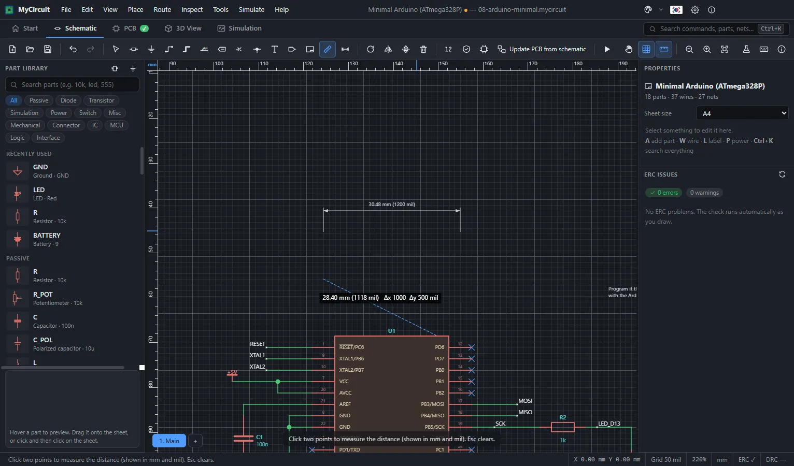
4.23Hierarchical sheets
A hierarchical sheet draws another page as a block; the sheet pins on its edges connect to hierarchical labels on that page.
- Press S () and drag a rectangle (at least 600 × 400 mil).
- Type the sheet name (default “Sheet 1”) and press Enter. A new page of that name is created and added to the page tabs; a toast explains the next step.
- Double-click the block to open its page. Draw the circuit and put hierarchical labels (H, ) on the signals that leave the page.
- The block's pins follow the labels automatically — added, renamed or removed labels update the pins (sorted by name, alternating left/right at 100 mil, the block grows as needed). Pins are derived data, so no undo step is recorded.
- Back on the parent page, wire to the pin ends — they are snap/connection points.
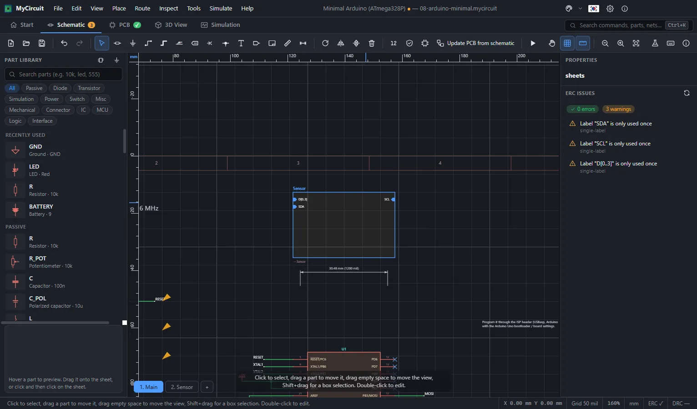
- The block shows its name, the target page name and the pins; it can be selected, moved and deleted (the page stays).
- A hierarchical label connects to the same-named pin of the block that shows its page.
- ERC:
sheet-target(block points to a missing page) andhier-unconnected(label without a matching pin), see 5.4. - KiCad hierarchical sheets import into the same structure (13.9).
Select a sheet block to edit it in the Properties panel: Name (renames its page too), Width and Height (− / + steppers), the list of sheet pins, and an Open sheet page button.
4.24Vector (bus) labels
A label named NAME[a..b] stands for several signals: D[0..7] = D0 … D7 (up to 256). As a global label it joins every member across pages; as a sheet pin name (a D[0..7] hierarchical label on the sub-page) it joins D0…D7 of the parent page to D0…D7 of the sub-page member by member. The members themselves are connected with ordinary labels; thick bus lines remain graphics.
4.25Multi-unit parts
| Symbol | Units |
|---|---|
LM358_DUAL | A: 3(+), 2(−), 1(out) · B: 5(+), 6(−), 7(out) · C: power 8 (V+), 4 (V−) |
74HC00 | A: 1, 2 → 3 · B: 4, 5 → 6 · C: 9, 10 → 8 · D: 12, 13 → 11 · E: power 14 (VCC), 7 (GND) |
- Each click of the place tool puts down the next unit (U?A → U?B …, then a new component); the status bar says “Placing unit B — click to place, Esc to stop.” Units placed together form one component and share a reference.
- The Unit selector in the inspector changes which unit a symbol shows.
- References show the unit letter (U1A). The units become one footprint on the board; shared pins (power unit) are one net; units sharing a reference are not a duplicate-reference error.
5Connectivity rules and ERC
5.1Connectivity rules
- A wire end connects to whatever sits exactly on it (pin tip, wire end, label anchor, junction).
- A wire end, pin tip, label anchor or junction on the middle of another wire connects to it (T joint).
- Crossing wires do not connect unless a junction sits on the crossing.
- Net labels with the same text are one net on their page; global labels on all pages.
- Power symbols join the net named by their value on all pages.
- Pins of one part with the same number (e.g. a tact switch's twin pads) are one net.
- Geometry never connects across pages.
- A hierarchical label connects to the same-named pin of the sheet block showing its page (4.23).
- Vector labels
D[0..7]expand toD0…D7on global labels and sheet pins (4.24). - The units of a multi-unit part are one component: same-numbered pins are one net. Hidden power-input pins (e.g. KiCad logic parts) join the net named like the pin.
- Buses and texts carry no connectivity.
5.2Net names
Priority: power symbol name → global label → net label → automatic Net-(REF-PadN) from the lowest reference's pin. Duplicate names get _1, _2. Names are used on the board, in probes, netlists and the BOM — label important signals. shows all nets.
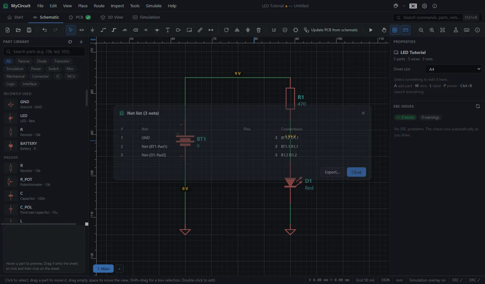
5.3Running ERC
With Run ERC continuously (default) ERC reruns about 0.35 s after every edit, updating the list, tab badge, status bar and canvas flags. Manually: , the toolbar button, the status-bar cell or the refresh button — a toast summarises the result and the right panel opens.
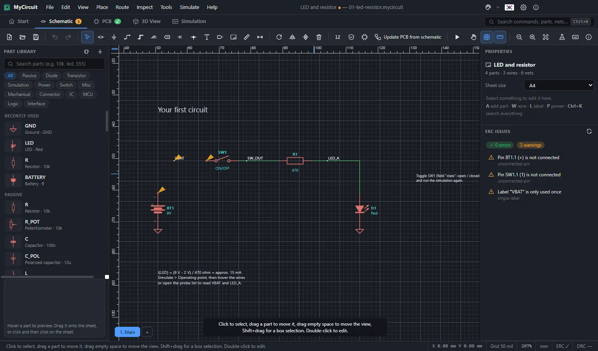
5.4ERC checks
| Code | Severity | Message | Meaning | Fix |
|---|---|---|---|---|
unknown-symbol | error | Unknown symbol "…" | The part uses a symbol that is not in the library | Replace it, or create the symbol in the symbol editor |
unannotated | error | R? is not annotated | Reference ends with ? or is empty | |
duplicate-ref | error | Duplicate reference R1 | Two parts share a reference | Rename one or re-annotate all |
no-footprint | warning | R1 has no footprint assigned | Will not be placed on the board | Inspector or |
output-conflict | error | Outputs … drive the same net … | Two or more output pins on one net | Fix the wiring |
power-undriven | error | Power input U1.8 (VCC) on net +5V is not driven by any power output (add a PWR_FLAG) | A power_in pin with no power_out pin (source, battery, regulator output, USB VBUS) or PWR_FLAG on its net | Add PWR_FLAG if power comes from a connector; otherwise connect a supply |
unconnected-pin | warning | Pin R1.1 (~) is not connected | A pin connected to nothing (no label, no power) | Connect it, or add a no-connect flag (Q) |
nc-connected | warning | Pin U1.5 has a no-connect flag but is connected | A flagged pin is connected | Remove the flag or the connection |
no-driver | warning | Net … has only input pins | All pins of the net are input | Connect an output or a pull resistor |
dangling-wire | warning | Wire end is not connected to anything | Yellow circle on the canvas | Extend or delete the wire |
single-label | warning | Label "…" is only used once | Name used once and its net has fewer than two pins — likely a missing or misspelt partner (hierarchical and vector labels are not checked here; hierarchical labels are checked by hier-unconnected) | Add the partner label or fix the name |
stray-nc | warning | No-connect flag is not on a pin | Left behind after moving a part | Delete it and re-place on the pin |
sheet-target | error | Sheet "…" points to a page that does not exist | The block's target page was deleted | Delete and redraw the block, or undo the page deletion |
hier-unconnected | warning | Hierarchical label "…" has no matching sheet pin | No block shows this page, or the name does not match | Create a sheet block for the page, or use net/global labels |
6Part library
6.1Using the library panel
- Search matches name, title (English/Korean), category, keywords and default value; every word must match (
led,10k,555,timer). Enter picks the first hit. - Category chips: All · Passive · Diode · Transistor · Simulation · Power · Switch · Misc · Mechanical · Connector · IC · MCU · Logic · Interface (+ your custom categories).
- Recently used is on top when the search and category are empty.
- Preview: hover a part for a large symbol picture and its default footprint.
- Place: click then click the sheet, or drag onto the sheet.
6.2Built-in symbols
59 built-in symbols (multi-unit symbols list their units under the pins, 4.25). Pin types other than passive are shown in brackets. “Model pin order” is the order the simulator takes the pins in.
| Name | Description | Ref | Default value | Pins (number:name(type)) | Simulation model | Suggested footprints |
|---|---|---|---|---|---|---|
| Passive | ||||||
R | Resistor | R | 10k | 1 2 | R resistormodel pin order: 1,2 | R_0805R_0603R_1206R_Axial_P10.16mmR_Axial_P7.62mm |
R_POT | Potentiometer | RV | 10k | 1 2:W 3 | POT potentiometermodel pin order: 1,2,3 | Potentiometer_3386P |
C | Capacitor | C | 100n | 1 2 | C capacitormodel pin order: 1,2 | C_0805C_0603C_1206C_Disc_D5.0mm_P5.00mm |
C_POL | Polarized capacitor | C | 10u | 1 2 | C capacitormodel pin order: 1,2 | CP_Radial_D5.0mm_P2.00mmCP_Radial_D8.0mm_P3.50mm |
L | Inductor | L | 10u | 1 2 | L inductormodel pin order: 1,2 | L_0805L_1206 |
FUSE | Fuse | F | 500mA | 1 2 | R resistor — fixed 0.05 Ω regardless of valuemodel pin order: 1,2 | Fuse_1206 |
CRYSTAL | Crystal | Y | 16MHz | 1 2 | — (ignored by the simulator) | Crystal_HC49-U |
| Diode | ||||||
D | Diode | D | 1N4148 | 1:K 2:A | D Shockley diodeis=2.52e-9, n=1.752 model pin order: 2,1 | D_SOD-123D_DO-41_P10.16mm |
D_SCHOTTKY | Schottky diode | D | BAT54 | 1:K 2:A | D Shockley diodeis=3e-7, n=1.05 model pin order: 2,1 | D_SOD-123 |
D_ZENER | Zener diode | D | 5V1 | 1:K 2:A | D Shockley diodeis=1e-12, n=1.5, bv=5.1 model pin order: 2,1 | D_SOD-123 |
LED | LED | D | Red | 1:K 2:A | D Shockley diode — LED: automatic rs = 10 Ωis=1e-19, n=1.8 model pin order: 2,1 | LED_0805LED_D5.0mmLED_D3.0mm |
| Transistor | ||||||
Q_NPN | NPN transistor | Q | 2N3904 | 2:B(input) 3:C 1:E | NPN NPN (Ebers-Moll)is=6.7e-15, bf=200, br=2 model pin order: 3,2,1 | TO-92_InlineSOT-23_Q |
Q_PNP | PNP transistor | Q | 2N3906 | 2:B(input) 3:C 1:E | PNP PNP (Ebers-Moll)is=6.7e-15, bf=200, br=2 model pin order: 3,2,1 | TO-92_InlineSOT-23_Q |
Q_NMOS | N-channel MOSFET | Q | 2N7000 | 2:G(input) 3:D 1:S | NMOS NMOS (square law)vt=2.1, k=0.1 model pin order: 3,2,1 | TO-92_InlineSOT-23_Q |
Q_PMOS | P-channel MOSFET | Q | PMOS | 2:G(input) 3:D 1:S | PMOS PMOS (square law)vt=2, k=0.1 model pin order: 3,2,1 | TO-92_InlineSOT-23_Q |
| Simulation | ||||||
VSOURCE | Voltage source | V | 5 | 1:+(power_out) 2:-(power_out) | V voltage sourcemodel pin order: 1,2 default fields: wave=dc, amplitude=1, freq=1k, offset=0, period=1m, duty=50 | PinHeader_1x02_P2.54mm |
ISOURCE | Current source | I | 1m | 1:+(power_out) 2:-(power_out) | I current sourcemodel pin order: 1,2 | PinHeader_1x02_P2.54mm |
OPAMP | Op-amp | U | OPAMP | 3:+(input) 2:-(input) 1(output) 7:V+(power_in) 4:V-(power_in) | OPAMP op-amp (high-gain VCVS, rail-limited)gain=100000 model pin order: 3,2,1,7,4 | DIP-8_W7.62mmSOIC-8_3.9x4.9mm |
| Power | ||||||
BATTERY | Battery | BT | 9 | 1:+(power_out) 2:-(power_out) | V voltage sourcemodel pin order: 1,2 | PinHeader_1x02_P2.54mm |
GND | Ground | #PWR | GND | 1:GND(power_in) | — (ignored by the simulator) | — |
VCC | Power VCC | #PWR | VCC | 1:VCC(power_in) | — (ignored by the simulator) | — |
+5V | Power +5V | #PWR | +5V | 1:+5V(power_in) | — (ignored by the simulator) | — |
+3V3 | Power +3V3 | #PWR | +3V3 | 1:+3V3(power_in) | — (ignored by the simulator) | — |
+12V | Power +12V | #PWR | +12V | 1:+12V(power_in) | — (ignored by the simulator) | — |
VBAT | Power VBAT | #PWR | VBAT | 1:VBAT(power_in) | — (ignored by the simulator) | — |
-12V | Power -12V | #PWR | -12V | 1:-12V(power_in) | — (ignored by the simulator) | — |
PWR_FLAG | Power flag | #FLG | PWR_FLAG | 1:pwr(power_out) | — (ignored by the simulator) | — |
LM7805 | 5V linear regulator | U | LM7805 | 1:VI(power_in) 3:VO(power_out) 2:GND(power_in) | REG linear regulatorvout=5, dropout=2 model pin order: 1,3,2 | TO-220-3_Vertical |
AMS1117-3.3 | 3.3V LDO regulator | U | AMS1117-3.3 | 3:VI(power_in) 2:VO(power_out) 1:GND(power_in) | REG linear regulatorvout=3.3, dropout=1.1 model pin order: 3,2,1 | SOT-223-3 |
| Switch | ||||||
SW_PUSH | Push button | SW | SW_Push | 1 2 | SW switch (closed 0.01 Ω / open 1 GΩ)model pin order: 1,2 default fields: state=open | SW_PUSH_6mm |
SW_SPST | Toggle switch | SW | SW_SPST | 1 2 | SW switch (closed 0.01 Ω / open 1 GΩ)model pin order: 1,2 default fields: state=closed | PinHeader_1x02_P2.54mm |
| Misc | ||||||
BUZZER | Buzzer | BZ | Buzzer | 1:+ 2:- | R resistor — fixed 42 Ω regardless of valuemodel pin order: 1,2 | Buzzer_12mm |
MOTOR | DC motor | M | Motor | 1 2 | R resistor — fixed 20 Ω regardless of valuemodel pin order: 1,2 | PinHeader_1x02_P2.54mm |
TESTPOINT | Test point | TP | TP | 1 | — (ignored by the simulator) | TestPoint_Pad_D1.5mm |
| Mechanical | ||||||
MOUNTING_HOLE | Mounting hole | H | MountingHole | — | — (ignored by the simulator) | MountingHole_3.2mm |
| Connector | ||||||
Conn_01x01 | Connector 1×1 | J | Conn_01x01 | 1:Pin_1 | — (ignored by the simulator) | PinHeader_1x01_P2.54mm |
Conn_01x02 | Connector 1×2 | J | Conn_01x02 | 1:Pin_1 2:Pin_2 | — (ignored by the simulator) | PinHeader_1x02_P2.54mm |
Conn_01x03 | Connector 1×3 | J | Conn_01x03 | 1:Pin_1 2:Pin_2 3:Pin_3 | — (ignored by the simulator) | PinHeader_1x03_P2.54mm |
Conn_01x04 | Connector 1×4 | J | Conn_01x04 | 1:Pin_1 2:Pin_2 3:Pin_3 4:Pin_4 | — (ignored by the simulator) | PinHeader_1x04_P2.54mm |
Conn_01x05 | Connector 1×5 | J | Conn_01x05 | 1:Pin_1 2:Pin_2 3:Pin_3 4:Pin_4 5:Pin_5 | — (ignored by the simulator) | PinHeader_1x05_P2.54mm |
Conn_01x06 | Connector 1×6 | J | Conn_01x06 | 1:Pin_1 2:Pin_2 3:Pin_3 4:Pin_4 5:Pin_5 6:Pin_6 | — (ignored by the simulator) | PinHeader_1x06_P2.54mm |
Conn_01x07 | Connector 1×7 | J | Conn_01x07 | 1:Pin_1 2:Pin_2 3:Pin_3 4:Pin_4 5:Pin_5 6:Pin_6 7:Pin_7 | — (ignored by the simulator) | PinHeader_1x07_P2.54mm |
Conn_01x08 | Connector 1×8 | J | Conn_01x08 | 1:Pin_1 2:Pin_2 3:Pin_3 4:Pin_4 5:Pin_5 6:Pin_6 7:Pin_7 8:Pin_8 | — (ignored by the simulator) | PinHeader_1x08_P2.54mm |
Conn_01x09 | Connector 1×9 | J | Conn_01x09 | 1:Pin_1 2:Pin_2 3:Pin_3 4:Pin_4 5:Pin_5 6:Pin_6 7:Pin_7 8:Pin_8 9:Pin_9 | — (ignored by the simulator) | PinHeader_1x09_P2.54mm |
Conn_01x10 | Connector 1×10 | J | Conn_01x10 | 1:Pin_1 2:Pin_2 3:Pin_3 4:Pin_4 5:Pin_5 6:Pin_6 7:Pin_7 8:Pin_8 9:Pin_9 10:Pin_10 | — (ignored by the simulator) | PinHeader_1x10_P2.54mm |
Conn_02x02 | Connector 2×2 | J | Conn_02x02 | 1:Pin_1 3:Pin_3 2:Pin_2 4:Pin_4 | — (ignored by the simulator) | PinHeader_2x02_P2.54mm |
Conn_02x03 | Connector 2×3 | J | Conn_02x03 | 1:Pin_1 3:Pin_3 5:Pin_5 2:Pin_2 4:Pin_4 6:Pin_6 | — (ignored by the simulator) | PinHeader_2x03_P2.54mm |
Conn_02x04 | Connector 2×4 | J | Conn_02x04 | 1:Pin_1 3:Pin_3 5:Pin_5 7:Pin_7 2:Pin_2 4:Pin_4 6:Pin_6 8:Pin_8 | — (ignored by the simulator) | PinHeader_2x04_P2.54mm |
Conn_02x05 | Connector 2×5 | J | Conn_02x05 | 1:Pin_1 3:Pin_3 5:Pin_5 7:Pin_7 9:Pin_9 2:Pin_2 4:Pin_4 6:Pin_6 8:Pin_8 10:Pin_10 | — (ignored by the simulator) | PinHeader_2x05_P2.54mm |
Conn_02x08 | Connector 2×8 | J | Conn_02x08 | 1:Pin_1 3:Pin_3 5:Pin_5 7:Pin_7 9:Pin_9 11:Pin_11 13:Pin_13 15:Pin_15 2:Pin_2 4:Pin_4 6:Pin_6 8:Pin_8 10:Pin_10 12:Pin_12 14:Pin_14 16:Pin_16 | — (ignored by the simulator) | PinHeader_2x08_P2.54mm |
USB_B_Micro | Micro USB connector | J | USB_B_Micro | 1:VBUS(power_out) 2:D-(bidir) 3:D+(bidir) 4:ID 5:GND(power_out) | — (ignored by the simulator) | USB_Micro-B |
| IC | ||||||
NE555 | NE555 timer | U | NE555 | 2:TR(input) 6:THR(input) 5:CV(input) 4:R(input) 3:Q(output) 7:DIS(open_collector) 8:VCC(power_in) 1:GND(power_in) | — (ignored by the simulator) | DIP-8_W7.62mmSOIC-8_3.9x4.9mm |
LM358 | Dual op-amp | U | LM358 | 3:+IN_A(input) 2:-IN_A(input) 5:+IN_B(input) 6:-IN_B(input) 1:OUT_A(output) 7:OUT_B(output) 8:V+(power_in) 4:V-(power_in) | — (ignored by the simulator) | DIP-8_W7.62mmSOIC-8_3.9x4.9mm |
LM358_DUAL | Dual op-amp (2 units + power) | U | LM358 | 3:+(input) 2:-(input) 1(output) 5:+(input) 6:-(input) 7(output) 8:V+(power_in) 4:V-(power_in) units: A, B, C | — (ignored by the simulator) | DIP-8_W7.62mmSOIC-8_3.9x4.9mm |
| MCU | ||||||
ATmega328P | ATmega328P MCU | U | ATmega328P-PU | 1:~RESET~/PC6(input) 9:XTAL1/PB6(bidir) 10:XTAL2/PB7(bidir) 7:VCC(power_in) 20:AVCC(power_in) 21:AREF 8:GND(power_in) 22:GND(power_in) 2:PD0/RXD(bidir) 3:PD1/TXD(bidir) 4:PD2(bidir) 5:PD3(bidir) 6:PD4(bidir) 11:PD5(bidir) 12:PD6(bidir) 13:PD7(bidir) 14:PB0(bidir) 15:PB1(bidir) 16:PB2(bidir) 17:PB3/MOSI(bidir) 18:PB4/MISO(bidir) 19:PB5/SCK(bidir) 23:PC0(bidir) 24:PC1(bidir) 25:PC2(bidir) 26:PC3(bidir) 27:PC4/SDA(bidir) 28:PC5/SCL(bidir) | — (ignored by the simulator) | DIP-28_W7.62mm |
ATtiny85 | ATtiny85 MCU | U | ATtiny85-20PU | 1:PB5/~RESET~(bidir) 2:PB3(bidir) 3:PB4(bidir) 4:GND(power_in) 8:VCC(power_in) 7:PB2/SCK(bidir) 6:PB1/MISO(bidir) 5:PB0/MOSI(bidir) | — (ignored by the simulator) | DIP-8_W7.62mmSOIC-8_3.9x4.9mm |
| Logic | ||||||
74HC595 | 8-bit shift register | U | 74HC595 | 14:SER(input) 11:SRCLK(input) 12:RCLK(input) 10:~SRCLR~(input) 13:~OE~(input) 16:VCC(power_in) 8:GND(power_in) 15:QA(tristate) 1:QB(tristate) 2:QC(tristate) 3:QD(tristate) 4:QE(tristate) 5:QF(tristate) 6:QG(tristate) 7:QH(tristate) 9:QH'(output) | — (ignored by the simulator) | DIP-16_W7.62mmSOIC-16_3.9x9.9mm |
74HC00 | Quad 2-input NAND (4 gates + power) | U | 74HC00 | 1(input) 2(input) 3(output) 4(input) 5(input) 6(output) 9(input) 10(input) 8(output) 12(input) 13(input) 11(output) 14:VCC(power_in) 7:GND(power_in) units: A, B, C, D, E | — (ignored by the simulator) | DIP-14_W7.62mm |
| Interface | ||||||
CH340G | USB-UART bridge | U | CH340G | 5:UD+(bidir) 6:UD-(bidir) 9:XI(input) 10:XO(output) 16:VCC(power_in) 4:V3 1:GND(power_in) 2:TXD(output) 3:RXD(input) 13:~DTR~(output) 14:~RTS~(output) 11:~CTS~(input) 12:~DSR~(input) 15:R232(input) 7:~RI~(input) 8:~DCD~(input) | — (ignored by the simulator) | SOIC-16_3.9x9.9mm |
6.3Built-in footprints
56 built-in footprints (mm). Pad layers: F top SMD, * through-hole, B SMD on the far side of the footprint (edge-mount connectors with pads on both faces; used by imported and custom footprints). Courtyard = keep-out size used for placement and DRC. Every footprint has a 3D model.
| Name | Description | Mount | Pads | Drill | Courtyard (mm) |
|---|---|---|---|---|---|
| Chip | |||||
R_1206 | R 1206 (3.2×1.60 mm) SMD | SMD | 2 | — | 4.65×2.70 |
C_1206 | C 1206 (3.2×1.60 mm) SMD | SMD | 2 | — | 4.65×2.70 |
L_1206 | L 1206 (3.2×1.60 mm) SMD | SMD | 2 | — | 4.65×2.70 |
Fuse_1206 | Fuse 1206 (3.2×1.60 mm) SMD | SMD | 2 | — | 4.65×2.70 |
R_0402 | R 0402 (1.0×0.50 mm) SMD | SMD | 2 | — | 2.10×1.10 |
C_0402 | C 0402 (1.0×0.50 mm) SMD | SMD | 2 | — | 2.10×1.10 |
R_0603 | R 0603 (1.6×0.80 mm) SMD | SMD | 2 | — | 3.00×1.85 |
C_0603 | C 0603 (1.6×0.80 mm) SMD | SMD | 2 | — | 3.00×1.85 |
LED_0603 | LED 0603 (1.6×0.80 mm) SMD | SMD | 2 | — | 3.00×1.85 |
R_0805 | R 0805 (2.0×1.25 mm) SMD | SMD | 2 | — | 3.40×2.35 |
C_0805 | C 0805 (2.0×1.25 mm) SMD | SMD | 2 | — | 3.40×2.35 |
L_0805 | L 0805 (2.0×1.25 mm) SMD | SMD | 2 | — | 3.40×2.35 |
LED_0805 | LED 0805 (2.0×1.25 mm) SMD | SMD | 2 | — | 3.40×2.35 |
| Axial | |||||
R_Axial_P7.62mm | Resistor axial DIN0204, pitch 7.62 mm | THT | 2 | 0.8 mm | 9.72×2.10 |
R_Axial_P10.16mm | Resistor axial DIN0207, pitch 10.16 mm | THT | 2 | 0.8 mm | 12.26×3.00 |
D_DO-41_P10.16mm | Diode DO-41, pitch 10.16 mm | THT | 2 | 1.1 mm | 12.86×3.30 |
| Radial | |||||
CP_Radial_D5.0mm_P2.00mm | Electrolytic capacitor D5 mm, pitch 2 mm | THT | 2 | 0.8 mm | 6.82×5.92 |
CP_Radial_D8.0mm_P3.50mm | Electrolytic capacitor D8 mm, pitch 3.5 mm | THT | 2 | 0.8 mm | 9.82×8.92 |
C_Disc_D5.0mm_P5.00mm | Ceramic disc capacitor D5 mm, pitch 5 mm | THT | 2 | 0.8 mm | 7.10×3.50 |
| LED | |||||
LED_D3.0mm | LED 3 mm round THT | THT | 2 | 0.9 mm | 5.70×5.70 |
LED_D5.0mm | LED 5 mm round THT | THT | 2 | 0.9 mm | 6.30×6.30 |
| Crystal | |||||
Crystal_HC49-U | Crystal HC-49/U, pitch 4.88 mm | THT | 2 | 0.8 mm | 12.00×5.10 |
| Potentiometer | |||||
Potentiometer_3386P | Trimmer potentiometer Bourns 3386P | THT | 3 | 0.9 mm | 10.20×7.90 |
| Misc | |||||
Buzzer_12mm | Piezo buzzer 12 mm, pitch 7.6 mm | THT | 2 | 1 mm | 12.70×12.70 |
TestPoint_Pad_D1.5mm | Test point pad Ø1.5 mm | SMD | 1 | — | 2.50×2.50 |
| Switch | |||||
SW_PUSH_6mm | Tactile switch 6×6 mm THT | THT | 4 | 1.1 mm | 9.00×7.00 |
| Mechanical | |||||
MountingHole_3.2mm | Mounting hole M3 (3.2 mm, NPTH) | THT | 1 | 3.2 mm | 6.50×6.50 |
| Connector | |||||
PinHeader_1x01_P2.54mm | Pin header 1×1, 2.54 mm | THT | 1 | 1 mm | 3.16×3.16 |
PinHeader_1x02_P2.54mm | Pin header 1×2, 2.54 mm | THT | 2 | 1 mm | 3.16×5.70 |
PinHeader_1x03_P2.54mm | Pin header 1×3, 2.54 mm | THT | 3 | 1 mm | 3.16×8.24 |
PinHeader_1x04_P2.54mm | Pin header 1×4, 2.54 mm | THT | 4 | 1 mm | 3.16×10.78 |
PinHeader_1x05_P2.54mm | Pin header 1×5, 2.54 mm | THT | 5 | 1 mm | 3.16×13.32 |
PinHeader_1x06_P2.54mm | Pin header 1×6, 2.54 mm | THT | 6 | 1 mm | 3.16×15.86 |
PinHeader_1x07_P2.54mm | Pin header 1×7, 2.54 mm | THT | 7 | 1 mm | 3.16×18.40 |
PinHeader_1x08_P2.54mm | Pin header 1×8, 2.54 mm | THT | 8 | 1 mm | 3.16×20.94 |
PinHeader_1x09_P2.54mm | Pin header 1×9, 2.54 mm | THT | 9 | 1 mm | 3.16×23.48 |
PinHeader_1x10_P2.54mm | Pin header 1×10, 2.54 mm | THT | 10 | 1 mm | 3.16×26.02 |
PinHeader_2x02_P2.54mm | Pin header 2×2, 2.54 mm | THT | 4 | 1 mm | 5.70×5.70 |
PinHeader_2x03_P2.54mm | Pin header 2×3, 2.54 mm | THT | 6 | 1 mm | 5.70×8.24 |
PinHeader_2x04_P2.54mm | Pin header 2×4, 2.54 mm | THT | 8 | 1 mm | 5.70×10.78 |
PinHeader_2x05_P2.54mm | Pin header 2×5, 2.54 mm | THT | 10 | 1 mm | 5.70×13.32 |
PinHeader_2x08_P2.54mm | Pin header 2×8, 2.54 mm | THT | 16 | 1 mm | 5.70×20.94 |
USB_Micro-B | USB Micro-B receptacle (SMD) | SMD | 9 | — | 8.80×5.47 |
| DIP | |||||
DIP-8_W7.62mm | DIP-8, 7.62 mm row spacing | THT | 8 | 0.8 mm | 9.72×11.78 |
DIP-14_W7.62mm | DIP-14, 7.62 mm row spacing | THT | 14 | 0.8 mm | 9.72×19.40 |
DIP-16_W7.62mm | DIP-16, 7.62 mm row spacing | THT | 16 | 0.8 mm | 9.72×21.94 |
DIP-28_W7.62mm | DIP-28, 7.62 mm row spacing | THT | 28 | 0.8 mm | 9.72×37.18 |
| SOIC | |||||
SOIC-8_3.9x4.9mm | SOIC-8, 3.9×4.9 mm, 1.27 mm pitch | SMD | 8 | — | 7.47×5.60 |
SOIC-16_3.9x9.9mm | SOIC-16, 3.9×9.9 mm, 1.27 mm pitch | SMD | 16 | — | 7.47×10.60 |
| QFP | |||||
TQFP-32_7x7mm_P0.8mm | TQFP-32, 7×7 mm, 0.8 mm pitch | SMD | 32 | — | 10.50×10.50 |
| SOT | |||||
SOT-23 | SOT-23 (3 pin) | SMD | 3 | — | 3.54×3.70 |
SOT-23_Q | SOT-23 transistor (pad 1 = B/G, 2 = E/S, 3 = C/D) | SMD | 3 | — | 3.54×3.70 |
SOT-223-3 | SOT-223 (3 pin + tab) | SMD | 4 | — | 8.80×7.20 |
| Diode | |||||
D_SOD-123 | Diode SOD-123 | SMD | 2 | — | 4.95×2.50 |
| TO | |||||
TO-92_Inline | TO-92 inline, 1.27 mm pitch | THT | 3 | 0.6 mm | 5.70×5.70 |
TO-220-3_Vertical | TO-220-3 vertical, 2.54 mm pitch | THT | 3 | 1.1 mm | 10.50×4.90 |
6.4Pin numbers and pads
A symbol pin connects to the footprint pad with the same number. Diodes and LEDs: 1 = cathode (K), 2 = anode (A); on through-hole footprints the square pad is 1 (cathode).
Transistor pin numbers — the built-in transistor symbols follow common TO-92 parts: Q_NPN/Q_PNP are 1 = E, 2 = B, 3 = C (2N3904/2N3906 E-B-C), Q_NMOS/Q_PMOS are 1 = S, 2 = G, 3 = D (2N7000 S-G-D). The SOT-23_Q footprint puts B/G (numbered "2") on physical pad 1, E/S (numbered "1") on pad 2 and C/D on pad 3, so SOT-23 transistors wire correctly (plain SOT-23 keeps the numbers in pad order). For parts with other pin orders (e.g. BS170/BS250 are D-G-S) check the datasheet and, if needed, make a custom symbol with matching pin numbers.
6.5Symbol editor
builds box symbols (ICs, modules) from a pin table.
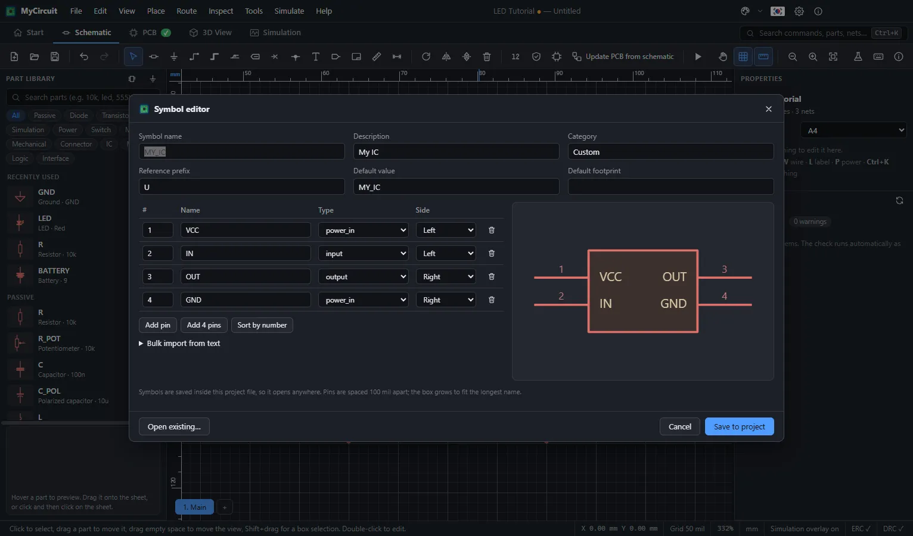
- Enter the symbol name (spaces become
_), description, category (becomes a library chip), reference prefix, default value and default footprint. - Fill the pin table: number, name, type (input, output, bidir, tristate, passive, power_in, power_out, open_collector, no_connect, unspecified) and side (left/right/top/bottom). Add pin, Add 4 pins (alternating left/right), Sort by number, trash = delete.
- Many pins? Open Bulk import from text, paste one pin per line as
number, name, type, side(comma, tab or semicolon) and click Import (defaults bidir / left). - The preview updates as you type; pins are 100 mil apart and the box grows to fit the longest name.
- Save to project stores it in the project file, adds it to the library and starts placing it.
Names of built-in symbols and duplicate pin numbers are rejected. Edit an existing custom symbol with Open existing…. Custom symbols have no simulation model.
6.6Footprint wizard
generates standard footprints from dimensions.
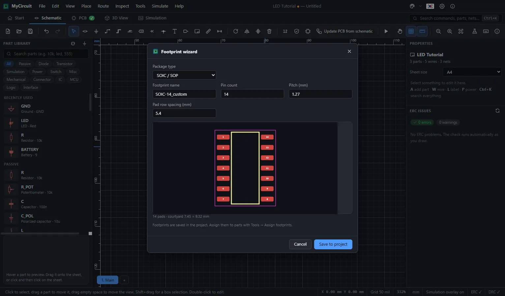
| Package type | Inputs | Result |
|---|---|---|
| Pin header | Rows (1–2), pins per row (≤ 40), pitch | THT 1.7 mm pads / 1.0 mm drill, pad 1 square |
| DIP | Pin count (even, 4–64), row spacing | 2.54 mm pitch, 1.6 mm pads / 0.8 mm drill |
| SOIC / SOP | Pin count, pitch, pad row spacing | SMD 1.55 mm × (pitch × 0.47) pads |
| QFP | Pins per side (2–40), pitch, body size | SMD pads on four sides |
| 2-pad chip (R/C/L) | Length, width | Two SMD pads |
| Custom pads | 3D body height, a pad table (number, shape rectangle/rounded/circle/oval, X, Y, W, H, drill), Add pad | Exactly the pads you list: drill 0 = top SMD pad, a drill = plated through-hole pad. Silk outline and courtyard wrap the pads with 0.5 mm; a box 3D model |
Pad count and courtyard size are shown under the preview. Save to project stores it (same name = replaced); then pick it by name in footprint assignment or part properties.
6.7Project-local library
Custom symbols and footprints live in the library section of the .mycircuit file, so the file opens anywhere. To reuse them in another project, recreate them there. Sample 12 shows this feature.
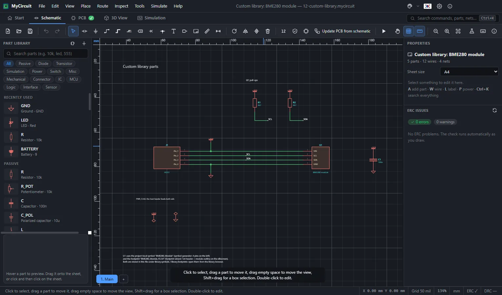
6.8Assign footprints dialog
Click a part in the table (reference, value, symbol, footprint), then a footprint on the right (filter box; ★ = suggested, listed first; hover = preview). Apply saves; Use first suggestion for empty ones fills empty parts and saves. Then press F8.
7PCB editor
On the PCB tab (F3) you place the footprints that came from the schematic and connect them with tracks, vias and copper zones.
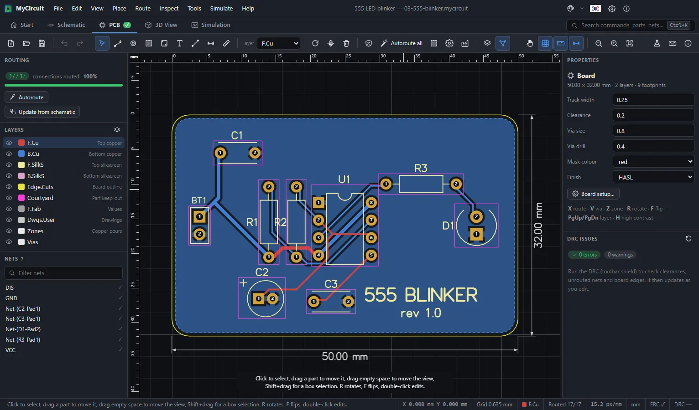
7.1Units, coordinates, grid
- PCB units are mm, y grows downwards. The status bar shows mm (3 decimals) or mil.
- PCB grid default 0.635 mm (25 mil); choose 0.05 … 2.54 mm in the status bar or Settings.
- Zoom 0.5–400 px/mm.
7.2Update PCB from schematic (F8)
- Unannotated parts are annotated first.
- For each schematic part (power symbols excluded): a new part gets a footprint in a column 5 mm to the right of the outline; an existing one (matched by part id or reference) keeps position, rotation and side but gets reference, value, footprint and pad nets updated; DNP parts and parts without a valid footprint are skipped (“no footprint: R5 …”).
- Footprints of parts deleted from the schematic are removed (board-only items stay).
- Renamed nets are carried onto existing tracks, vias and zones.
The PCB tab opens zoomed to fit with a summary such as “PCB updated — 3 added, 1 updated”, or “PCB is already up to date.”
A footprint changed in the PCB footprint dialog is overwritten by the next update — change footprints in the schematic.
7.3Layers
| Layer | Purpose | Can be active |
|---|---|---|
F.Cu / B.Cu | Top / bottom copper | yes |
In1.Cu … In4.Cu | Inner copper (4 layers: In1, In2; 6 layers: In1–In4) | yes |
F.SilkS / B.SilkS | Silkscreen | yes |
Edge.Cuts | Board outline | yes |
| Courtyard | Part keep-out (also controlled by the Show courtyards setting) | no |
F.Fab | Values (hidden by default) | no |
Dwgs.User | User drawings | yes |
| Zones / Vias | Visibility of all zones / vias | no |
- The active layer receives new tracks, zones, text and lines: Layer selector on the toolbar, click a layer row, or PgUp/PgDn (cycles copper layers). It is drawn on top and wins when clicking overlapping items.
- The eye icon hides a layer; hidden items cannot be selected.
- High contrast (H) dims the other copper layers to 25 %.
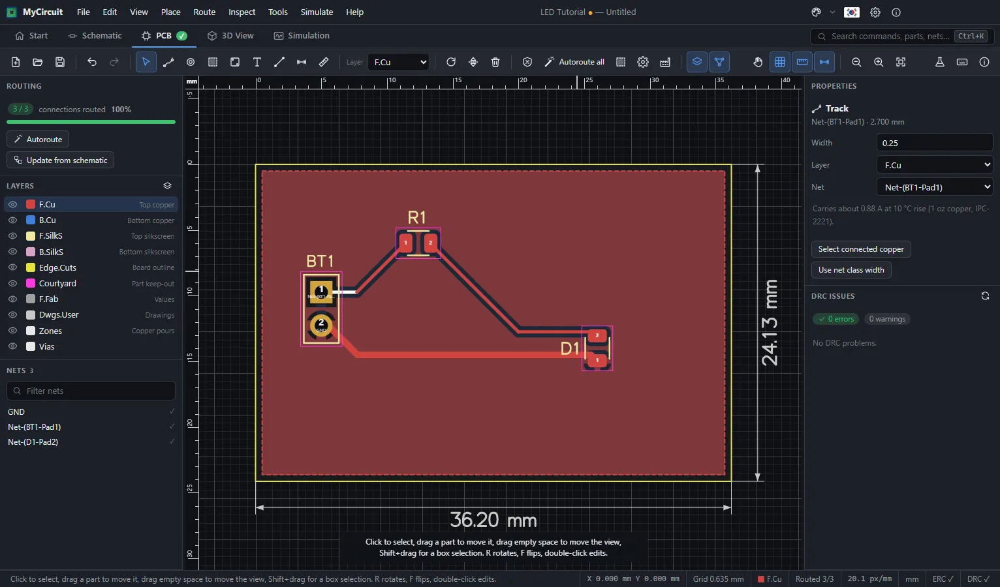
7.4Placing footprints
- Move: dragging snaps the footprint origin to the grid; arrows nudge one grid step.
- Rotate: R 90° CCW, Shift+R 90° CW (one footprint about its origin, several about the selection centre). Any angle can be typed in the inspector/dialog.
- Flip: F moves footprints to the other side (mirrored, rotation reversed, SMD pads to B.Cu, silk to B.SilkS); selected tracks/texts/graphics/zones change to the opposite layer.
- Lock: L — locked footprints cannot be moved, rotated, flipped or deleted (“n locked footprints were kept”) and are skipped by window selection; a lock icon is shown when selected.
- Properties: double-click or E — X/Y, rotation, side, footprint, locked, hide reference.
- Arrange: lays all unlocked footprints out in reference order in a grid inside the board.
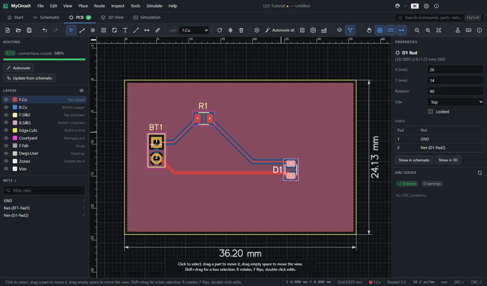
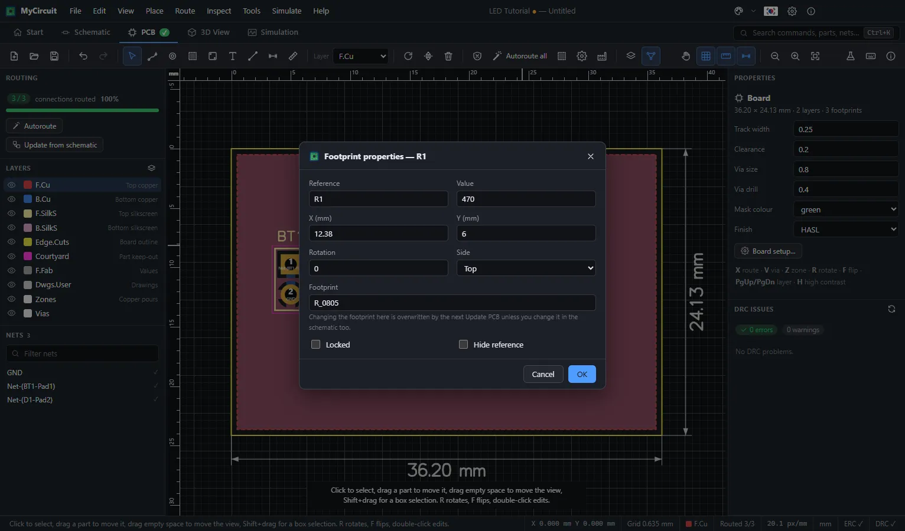
7.5Selecting
As in the schematic (click, Shift/Ctrl+click, Shift/Ctrl+drag window vs crossing box, Ctrl+A; a plain drag on empty space pans), plus: clicking copper highlights its net (and its ratsnest only); double-clicking a track selects the whole connected run (also Select connected copper); clicking the outline edge selects the outline (move/rotate, not delete); Ctrl+D duplicates tracks, vias, zones, texts, graphics and dimensions 2 mm down-right (not footprints).
7.6Interactive routing
- Start (X): click a pad, via or track end (active-layer copper first). Its net becomes the route's net. Starting on an SMD pad switches the active layer to that pad's side; THT pads and vias route on the current active layer.
- Width starts at the net-class width (or the default). While routing, W steps wider and Shift+W narrower: 0.15 → 0.2 → 0.25 → 0.3 → 0.4 → 0.5 → 0.6 → 0.8 → 1.0 → 1.5 → 2.0 mm.
- 45° posture: the preview is a straight run then a 45° diagonal; / puts the diagonal first. The cursor snaps to same-net pads/vias/track ends, otherwise to the grid.
- Live clearance check: the faint halo is the clearance. If a preview segment comes closer to other-net copper than the rule (largest net-class value) or violates the edge clearance, it turns red and the hint says “Clearance violation — this segment is too close to other copper.” (You can still place it; DRC will flag it.)
- Corners: each click commits the preview; Backspace removes the last segment.
- Vias: V while routing commits to the cursor, drops a via (net-class size) and switches layer (F.Cu ↔ B.Cu; inner layers step to the next copper layer).
- Finish: reaching same-net copper ends the route automatically; or Enter, Esc, double-click, right-click. One route = one undo step.
Routing modes
| Mode (Route menu / Settings → Routing) | When a segment would violate clearance |
|---|---|
| Routing: highlight collisions (default) | Placed anyway; the preview turns red and DRC reports it. |
| Routing: push and shove | Other-net tracks on the layer are pushed aside: a colliding segment moves in parallel, an end shared with one neighbour slides along it, an end on a pad/via stays and gets a 45° jog; pushed copper pushes further tracks (2 levels). Pads, vias, NPTH holes and the board edge never move — then “Push and shove: pads, vias, the board edge or too many tracks are in the way; the segment was not placed.” |
| Routing: stop at obstacles | The segment is not placed (“Clearance violation: the segment was not placed”). |
Settings → Routing → Warn about clearance while routing turns the red preview off.
Change a track's width in the inspector (or several at once). Use net class width resets it. The inspector also shows an IPC-2221 current estimate (1 oz, 10 °C rise, inner/outer).
7.7Vias
V (when not routing) places vias where you click; a via takes the net of the copper under it and the net-class size. Vias go through all copper layers (no blind/buried vias). Edit diameter, drill, net, X, Y in the inspector.
7.8Track widths and net classes
A net in a net class uses its track width, clearance, via diameter and drill; otherwise the design rules defaults (0.25 mm, 0.2 mm, 0.8/0.4 mm). Clearance between two nets = the largest of the default and both classes. New projects contain a Power class (0.5 mm, 0.25 mm, 1.0/0.5 mm; GND, VCC, +5V, +3V3, +12V, -12V, VBAT). Edit in .
7.9Copper zones
- Make a copper layer active and press Z.
- Click the corners (grid-snapped).
- Double-click or Enter closes it (≥ 3 corners); Esc cancels.
- In New copper zone choose net (default GND/AGND/DGND/VSS if present), layer, clearance (0.3 mm), priority and thermal reliefs, then Create zone.
- Other-net pads, tracks and vias are cleared by max(zone clearance, default clearance); unnetted pads and NPTH holes too.
- Same-net pads inside the outline connect through thermal reliefs: a gap plus four spokes (width = max(0.3 mm, 0.45 × pad's short side, 0.8 × class width)); a spoke that would hit another net's track or via is dropped. With reliefs off, pads are flooded solid.
- Same-net tracks and vias merge with the zone.
- Priority: where zones of different nets overlap on a layer, the higher priority wins and the lower one clears around it; equal priorities are a DRC
zone_overlaperror. - Connectivity: a pad, track end or via inside a same-net zone outline counts as connected through the zone, so a GND pour removes the GND airwires.
Connectivity only asks “is it inside the zone outline”. If other-net tracks cut the fill into islands, items may still count as connected — check narrow GND paths in 3D or the Gerber viewer.
Select a zone near its outline; double-click (or context menu) edits it; the inspector edits net, layer, clearance, priority and reliefs. creates zones on F.Cu/B.Cu covering the outline inset by (edge clearance + 0.2 mm), optionally replacing existing zones of that net.
7.10Board outline
- O and drag a rectangle: the outline is replaced at once (“Board outline set to W × H mm”); the corner radius setting rounds it.
- Other shapes: click the corners and double-click / Enter.
- : type width, height, corner radius and tick “Replace the outline with this rectangle”.
- One closed polygon; draw cut-outs as graphic lines (G) on
Edge.Cuts(7.11). Click its edge to select, move or rotate it.
7.11Text and graphic lines
- T: click and type. Text goes onto the active
F.SilkS/B.SilkS/Dwgs.Userlayer; with a copper layer active it goes onto that side's silkscreen; it never goes ontoEdge.Cuts(F.SilkS then). Default size 1.5 mm; bottom text is mirrored in outputs; exported with a built-in stroke font. - G (own “line” icon): each click adds a 0.15 mm segment, double-click finishes. Lines go onto the active silkscreen,
Dwgs.UserorEdge.Cutslayer; with a copper layer active they go onto that side's silkscreen.
Lines on Edge.Cuts are board cut-outs and are written to the outline Gerber (.gm1) — use them for holes or slots inside the board.
7.12Measure and dimension
- M: click two points for distance, Δx, Δy and mils (snaps to copper centres). Not saved; Esc clears.
- D: click two points to add a dimension line (saved with the board).
7.13Ratsnest and the net panel
The ratsnest joins the separately connected copper islands of each net with the shortest set of lines (minimum spanning tree). Toggle it in View or on the toolbar; a highlighted net shows only its own airwires. The Routing box shows routed/total (connections = Σ(pads − 1) per net). In the Nets list click to highlight and double-click to autoroute that net.
7.14Clean-up and reports
| Command | Effect |
|---|---|
| Removes zero-length and duplicate tracks, merges collinear same-net/width/layer segments through points nothing else uses, removes vias joining fewer than two layers (“Clean-up: n removed, m merged.”) | |
| After confirmation (zones stay) | |
| Track length, segments and vias per net, plus routing progress |
7.15Inspector on the PCB
| Selection | Fields |
|---|---|
| Nothing (board) | Summary, track width, clearance, via size/drill, mask colour, finish, Board setup… |
| Footprint | X, Y, rotation, side, locked, pad/net table (40), Show in schematic / 3D |
| Track | Width, layer, net, current capacity, Select connected copper, Use net class width |
| Via | Diameter, drill, net, X, Y |
| Zone | Net, layer, clearance, priority, thermal reliefs |
| Text | Text, size, rotation, layer |
| Outline | Corners and size, Board setup… |
7.16PCB context menu
Footprint: Properties…, Show in schematic, Show in 3D, Lock/Unlock · Zone: Zone properties… · Copper: Highlight net, Route net automatically, Select connected copper · Selection: Rotate, Flip, Duplicate, Delete · Always: Route track, Zoom to fit.
7.17Multi-layer boards
Set 2/4/6 copper layers in . Reducing the count moves tracks and zones of removed layers to B.Cu. Inner layers are typically power/GND planes made of zones and reached through vias (sample 11).
7.18Board size overlay and rulers
The PCB canvas shows the outline's width and height with dimension lines (bottom and right, in mm, e.g. “40.00 mm”, “24.00 mm”), updated live. Toggle with Show board size (toolbar, menu, Settings → Units & grid). Grid and rulers work as in the schematic (2.13).
7.19Length tuning
lengthens routed nets with meanders up to a target.
- The table lists nets with tracks and their length (longest first, 8 per page); tick the nets (a highlighted net is pre-ticked). The longest selected length is shown.
- Target: Match the longest selected net or Fixed length (stepper). Meander style: Rounded / Mitered (45°) / Square. Side: Both sides / Left / Right. Spacing 0.1–3 mm, Tolerance ± 0.01–1 mm.
- Tune adds a serpentine on each net's longest straight segment; each bump shrinks or is left out where clearance to other nets or the board edge would be violated, and the bumps are scaled to land on the target. One undo step; a toast reports the largest remaining skew. A net's length counts tracks and vias.
7.20Differential pairs
routes two nets paired by name (USB_D+/USB_D-, CLK_P/CLK_N) as two parallel tracks at a constant gap.
- Pick a pair (pair, P, N, current skew), set Layer, Track width and Gap, click Route. Existing tracks of both nets are replaced.
- Each net needs two pads on the layer; a centre line is found with A* between the pad midpoints and offset to both sides, with short fan-outs to the pads. The result reports both lengths and the skew. Without name-paired nets: “No differential pairs found. Name nets like USB_D+ / USB_D- or CLK_P / CLK_N.”
8Autorouter
8.1Running it
- (Ctrl+Shift+A), the toolbar button or the Routing panel: all unrouted connections.
- after clicking a pad/track; double-click a net in the net list; context menu → Route net automatically.
The result is added as one undo step: “All connections routed (n tracks, m vias) in t ms.” or “Routed r connections, f could not be routed.”
8.2How it works
- Routing nodes on the Settings → Routing → Autorouter grid (default 0.25 mm, 0.05–0.5 mm; coarsened on huge boards), obstacle maps at half that pitch so diagonal steps cannot clip pad corners.
- Obstacles: other-net pads/tracks/vias grown by clearance + half the width, the board edge (edge clearance), NPTH holes; one map set per net-class profile. Zones are not obstacles.
- A separate via map checks all copper layers, hole spacing and the edge; no vias in SMD pads; a via costs as much as 20 grid steps.
- Connections are routed shortest first with A* from any node of the source island to any node of the target island, 8 directions, with turn penalties (45° 0.35, 90° 0.9, 135° 6) and a mild preferred direction per layer.
- Paths are simplified into tracks and vias, snapped to pad/via centres and stamped into the maps immediately.
- Rip-up and retry: failures are routed first in a fresh pass (up to 3 passes); the better pass wins. Time limit 15 s.
8.3Limits
- By default uses only F.Cu and B.Cu; Settings → Routing → Autorouter layers = All copper layers also uses inner layers.
- Grid-based: fine-pitch parts (e.g. 0.5 mm QFP) may be unreachable.
- Existing tracks are kept and may block routes.
- No differential pairs, length matching or impedance control.
8.4Tips
- Placement decides most of the result: keep airwires short and uncrossed.
- Pour GND first — those connections then need no tracks.
- Route critical or heavy nets by hand, autoroute the rest.
- On failure: Remove all tracks, nudge parts, retry; then Clean up tracks and run DRC.
9DRC (design rules check)
9.1Running DRC
, the shield button, the status-bar cell or the refresh button. Results: a toast, the DRC issues list (code and layer), the PCB badge and circle-× markers (red errors, yellow warnings). Click an issue to zoom to it. DRC also runs when the fabrication dialog opens.
Once DRC has been run (and “Re-run DRC after edits once it has been run” is on, the default) it reruns after every edit — also after a clean pass — so the list and markers stay current. Opening another file resets it to “DRC —”.
9.2DRC checks
| Code | Severity | Meaning | Fix |
|---|---|---|---|
missing_footprint | error | Footprint name not in the library | Assign a valid footprint, F8 |
outline | error | Outline < 3 points, invalid point, zero area or self-crossing | Redraw with O |
footprint_outside | error | Courtyard outside or crossing the outline | Move the part or enlarge the board |
courtyard_overlap | warning | Courtyards on the same side overlap | Space the parts |
track_width | error | Track narrower than min track width (0.15) | Widen it |
via_drill | error | Via drill < min drill (0.3) | Bigger drill |
pad_drill | warning | Pad drill < min drill | Other footprint / check the fab |
annular_ring | error | (diameter − drill)/2 < 0.13 mm for a via or plated pad | Bigger via or smaller drill |
hole_to_hole | error | Hole edges closer than hole-to-hole (0.25) | Move the via |
clearance | error | Other-net copper closer than required | Move or narrow the track |
short | error | Other-net copper touching/overlapping | Delete and reroute |
no_net | warning | Unnetted track/via touches netted copper | Assign the net or delete |
zone_overlap | error | Different-net zones overlap with equal priority | Change a priority or shape |
edge_clearance | error | Copper closer to the edge than edge clearance (0.3) or outside the outline | Move it inwards |
dangling | warning | Track end touches nothing | Connect or clean up |
silk_over_pad | warning | Silk within 0.1 mm of an exposed pad | Move the silk (all built-in footprints are tested to place without it) |
unconnected | error | Remaining airwire | Route it or pour a zone |
10Board setup
has four tabs; Apply saves (one undo step), Restore default rules resets rules and net classes.
10.1Stack-up & finish
| Item | Choices | Used by |
|---|---|---|
| Copper layers | 2 / 4 / 6 | Editor layers, Gerber files, job file |
| Thickness | 0.8 / 1.0 / 1.2 / 1.6 / 2.0 mm | 3D, job file, README |
| Solder mask | green, red, blue, black, white, purple, yellow | 3D, job file |
| Silkscreen | white, black, yellow | 3D, job file |
| Surface finish | HASL, ENIG, OSP | 3D pad colour (ENIG gold, HASL tin, OSP copper), job file |
10.2Outline
Shows the current size; enter width, height, corner radius, tick “Replace the outline with this rectangle” (top-left corner kept). The radius is also saved for the outline tool.
10.3Design rules
| Rule | Default | Meaning |
|---|---|---|
| Clearance | 0.2 mm | Minimum gap between different nets |
| Track width | 0.25 mm | Width for nets without a class |
| Min track width | 0.15 mm | DRC track_width |
| Via diameter / drill | 0.8 / 0.4 mm | New vias |
| Min drill | 0.3 mm | DRC via_drill, pad_drill |
| Edge clearance | 0.3 mm | Copper to board edge (router, DRC, ground pour) |
| Hole to hole | 0.25 mm | Between hole edges |
Minimum annular ring (0.13 mm) and silk-to-pad gap (0.1 mm) are fixed. Match the rules to your board house.
10.4Quick rules in the inspector
With nothing selected on the PCB the inspector edits track width, clearance, via size and drill directly.
10.5Net classes
One row per class: name, track, clearance, via, drill, nets (comma separated, exact names). Add net class starts from the defaults; the board's net names are listed below for copying. The first class containing a net wins. Classes drive the routing start width, the autorouter, the via tool, zone spoke width and DRC clearance; existing tracks are not changed (use Use net class width).
113D view
The 3D tab (F4) loads its engine on first use and rebuilds automatically 0.25 s after PCB edits.
11.1Navigation
The two leftmost toolbar buttons pick the navigation mode: Rotate: left-drag orbits the view (default) and Pan (P): left-drag moves the view.
| Action | Rotate mode | Pan mode (P) |
|---|---|---|
| Left-drag | Orbit | Pan |
| Right-drag | Pan | Orbit |
| Wheel / middle-drag | Zoom | |
| Arrows / Shift+arrows | Rotate 7.5° / pan a little | |
| Double-click | Fly to point | |
| 1–7 | Iso · top · bottom · front · back · left · right | |
| P / G / A / C / Home | Toggle pan mode / grid / axes / components / fit | |
| Click a part | Selected everywhere; the right panel shows reference, footprint, side, position, rotation and Show in PCB / schematic | |
Settings → 3D view: Rotate speed (× 0.25 … × 3) and Field of view (15°–75°, default 35°).
11.2Display options, grid, axes and dimensions
Panel checkboxes: Components, Silkscreen, Solder mask, Copper, Copper zones, Board body, X-ray board, Axes, Grid, Orientation gizmo, Board dimensions (W × D × H); the toolbar has the same toggles plus Grid (G) and Axes (A).
- Grid: a 5 × 5 line grid under the board; the cell is a fifth of the unit (2 mm or 0.2 in) times a power of 5, chosen from the camera distance so the pattern looks the same at any zoom. Major lines carry values; a corner note shows “□ cell ▦ major”.
- Axes: X (red), Y (blue), Z (green) with ticks and values, labelled with the unit (e.g. “X (cm)”).
- Orientation gizmo: small X/Y/Z axes at the bottom left show the viewing direction.
- Board dimensions: width (W), depth (D) and height including parts (H) as yellow dimension lines (“W 6.2 cm”, “D 4.8 cm”, “H 1.4 cm”).
- Unit: the cm/inch toolbar button or Settings → Units & grid → 3D measurement unit (Centimetres (cm) / Inches (in)).
- Settings → 3D view → Start with chooses which helpers start on (grid with scale, coordinate axes, board dimensions); also 3D background (gradient/solid) and 3D shadows.
Board appearance (mask, silk, finish, thickness) is saved to the board (undoable); component/mesh/triangle statistics are shown at the bottom.
11.3Screenshot and 3D export
- Screenshot (PNG) saves
title-3d.png. - Export 3D model (STL / GLB)…: GLB keeps colours and materials (Blender, web viewers); STL is geometry only (mechanical CAD, 3D printing). The whole board and all parts are exported.
Component models are simplified, generated from the footprint's model kind and dimensions. Axial resistors show the colour bands of their value (4k7 = yellow-violet-red-gold).
12Simulation
MyCircuit contains a SPICE-style simulator: modified nodal analysis with Newton-Raphson iteration for non-linear parts. It simulates the schematic directly.
12.1The Simulation tab
F6. The top bar holds the analysis buttons (Operating point · Transient · AC (Bode) · DC sweep), their settings, Run (F5), the status (“Done in 15 ms · n warnings”) and the legend. Plot in the middle, result table below, probes on the left.
- F5 runs the current analysis; the Simulate-menu items switch analysis and run it.
- Enter in a settings field saves and runs. Settings are saved in the project.
- Hover the plot for a dashed cursor and values; click a legend entry to hide/show a trace.
12.2Analyses and settings
| Analysis | Fields | New-project defaults | Result |
|---|---|---|---|
| Operating point | — | — | Net voltage table, part current/power table, voltage badges on the schematic |
| Transient | Stop time, Step | 10m, 10u | Time plot; more than 100 000 points raises the step with a warning |
| AC (Bode) | Start freq, Stop freq, Points/decade, view dB / V / phase | 10, 1Meg, 50 | Log-frequency plot |
| DC sweep | Source (V/I source or battery), Start, Stop, Step | 0, 10, 0.1 | Operating points vs source value (≤ 100 001 points) |
Transient start: t = 0 comes from the operating point (capacitors charged to their DC voltage). Backward Euler is used for the first steps and after pulse edges, trapezoidal otherwise; failed steps are retried at a quarter of the step; pulse edges are always hit.
AC source: a source with an acmag field; otherwise the first sine/pulse voltage source, then a VSOURCE, then any voltage source gets 1 V at 0°. Non-linear parts are linearised at the operating point.
12.3Engineering notation
| Prefix | Factor | Examples |
|---|---|---|
f p n | 10−15, 10−12, 10−9 | 22p, 100n, 2.2nF |
u / µ | 10−6 | 10u, 4.7µF |
m | 10−3 | 10m, 20mA |
k / K | 103 | 10k, 4k7 |
M / Meg | 106 | 1Meg, 2M2 |
G T | 109, 1012 | 1G |
The prefix may replace the decimal point (4k7, 4R7 = 4.7, 5V1 = 5.1); unit letters are ignored (12V, 470Ω); exponents work (1e-6).
Unlike SPICE, capital M means mega and lowercase m milli. Write Meg to be safe. A value that cannot be read on an R/C/L/source is an error (“cannot read value”).
12.4Device models
The part value is the main parameter; numeric fields with a parameter's name override the model.
| Model | Symbols | Value | Fields / parameters (default) | Notes |
|---|---|---|---|---|
| R | R; FUSE 0.05 Ω, BUZZER 42 Ω, MOTOR 20 Ω (fixed) | Ω | — | ≤ 0 replaced by 1 µΩ |
| POT | R_POT | total | position 0–1 or % (0.5) | 1–W = total × position, W–3 = rest (≥ 1 mΩ each) |
| C / L | C, C_POL / L | F / H | — | C open and L short at DC; must be > 0 |
| V | VSOURCE, BATTERY | DC volts | wave dc/sine/pulse, amplitude (1), freq (1k), offset (0), period (1m), duty (50 %), phase (0°), acmag, acphase | V(1) − V(2) = waveform |
| I | ISOURCE | DC amps | as V (add fields yourself) | Pushes the value out of pin + into the circuit |
| SW | SW_PUSH (open), SW_SPST (closed) | — | state open/closed | 0.01 Ω / 1 GΩ |
| D | D (is 2.52n, n 1.752), D_SCHOTTKY (3e-7, 1.05), D_ZENER (1e-12, 1.5, bv 5.1), LED (1e-19, 1.8) | — | is, n, rs, bv, ibv (1m) | Shockley + optional breakdown and series resistance; LEDs get rs = 10 Ω unless set |
| NPN / PNP | Q_NPN, Q_PNP | — | is (6.7e-15), bf (200), br (2) | Ebers-Moll, model pins C B E (symbol pins 3, 2, 1) |
| NMOS / PMOS | Q_NMOS (vt 2.1, value 2N7000), Q_PMOS (2.0, value PMOS) | — | vt, k (0.1), lambda (0.01) | Square law (level-1-like), no body, model pins D G S (symbol pins 3, 2, 1) |
| OPAMP | OPAMP | — | gain (1e5), vpos (15), vneg (−15) | High-gain VCVS smoothly clamped (tanh) between V+ and V−; unconnected supply pins become ±15 V rails with a warning |
| REG | LM7805 (vout 5, dropout 2), AMS1117-3.3 (3.3, 1.1) | — | vout, dropout, rout (0.1 Ω), iq (5 mA) | Out = min(vout, in − dropout) ≥ 0, output resistance, quiescent current |
Waveforms: sine v = offset + amplitude · sin(2π·freq·t + phase°) (operating point uses t = 0); pulse — offset is the low level and amplitude the high level (not added), high for period × duty at the start of every period, ideal edges, operating point = low; dc — the part value.
Parts without a model (crystal, test point, connectors, NE555, LM358, MCUs, logic, custom symbols) are ignored with a warning when they have two or more pins; use the OPAMP symbol for op-amps. DNP parts are excluded.
12.5Ground and connectivity
- The
GND,0orAGNDnet is 0 V; without one you get “No GND net”. - Unconnected pins become private floating nodes (warning). Nets with no DC path to ground are held at 0 V by gmin (10−12 S, warning).
- Non-converging operating points fall back to gmin stepping and source stepping; singular matrices name the offending net or part.
12.6Sign conventions
I(ref) is the current flowing into the part's main pin: R/C/L/SW/POT pin 1 (1 → 2 positive); D/LED anode; V/BATTERY + pin (SPICE convention — negative while delivering power); I + pin (reads −value); NPN/PNP collector; NMOS/PMOS drain; REG input; OPAMP output (negative while sourcing). Power = Σ V(pin) · I(into pin): positive absorbed, negative delivered.
12.7Probes
- Tick voltages (all nets except GND/0/AGND) and currents (
I(R1)…) in the Probes panel; the trash button clears them. - In the schematic: right-click a wire → Probe this net in simulation, or Add probe in the wire inspector.
- Without probes, the first transient/AC/DC run probes the first four nets automatically. Probes are saved with the project.
12.8Voltage overlay
An operating-point run puts a voltage badge on the longest wire of each net (“Simulation overlay on” in the status bar). Toggle with ; clear with .
12.9SPICE netlist
(Copy, Save… as .cir) or . Ground nets become node 0; diodes/BJTs/MOSFETs get .model cards; op-amps and regulators become B-source .subckts; switches and pots become resistors; pulses become PULSE with 0.1 %-of-period edges; current sources are reversed to match SPICE; the analysis line (.tran, .ac dec, .dc <source> <start> <stop> <step> or .op) and warnings are appended.
12.10Limitations
- No noise, distortion, temperature, Monte-Carlo or parameter sweeps; no digital simulation.
- Simplified models (no junction capacitances, ideal pulse edges) — not accurate at high frequency.
- Capacitor currents read 0 in the operating-point table.
13Outputs
13.1Printing
| Option | Meaning |
|---|---|
| Schematic / PCB layers / Schematic and PCB | |
| Paper, Orientation | A4, A3, A5, Letter, Legal, Tabloid; landscape/portrait |
| Colour | Black and white |
| PCB pages | Top (F.Cu + F.SilkS + outline), Bottom, Inner layers, Assembly drawing (F.SilkS + F.Fab), Mirror bottom layer |
| PCB scale | Fit to page / Actual size 1:1 (toner transfer) |
| Copies | 1–99 |
The schematic prints one sheet per page (“Sheet: i/N name”). Print… opens the system/browser dialog; desktop also offers Save as PDF… (suggesting <project>.pdf). For 1:1 prints disable “fit to page” scaling in the printer dialog and check the size with a ruler.
13.2SVG / PNG
- Schematic as SVG: the current page as vector SVG at sheet size.
- Schematic as PNG: the current page at 300 dpi on white (A4 ≈ 3508 × 2480 px).
- PCB as SVG: choose layers, background (white/dark/transparent) and mirror; real mm size.
13.3Netlists
KiCad netlist (.net, S-expression version E) with components and nets; SPICE (.cir, 12.9); IPC-D-356 (.d356) inside the fabrication ZIP.
13.4BOM
: #, Qty, References, Value, Footprint, Description; Group identical parts (value + footprint + symbol + DNP). DNP rows are dimmed and listed last; clicking a row selects the parts everywhere. Copy puts CSV on the clipboard, Export CSV… writes title-BOM.csv (Item, Qty, References, Value, Footprint, Description, DNP, UTF-8 with BOM for Excel). Power symbols are excluded; board-only footprints are included.
13.5Pick & place
Ref,Val,Package,PosX,PosY,Rot,Side
"C1","100n","C_0805",12.3000,8.4500,90.0000,topOrigin at the bottom-left of the outline's bounding box, X right, Y up, mm with 4 decimals; Rot is CCW seen from the top (bottom parts keep the top-view angle); Side top/bottom. Footprints without pads, mounting holes and NPTH-only footprints are skipped.
13.6Fabrication outputs
runs DRC (warning banner when it has errors) and lists the files. Options: solder mask expansion (0.05 mm), tent vias (on), include BOM / pick & place / IPC-356.
| File | Contents | X2 FileFunction |
|---|---|---|
…-F_Cu.gtl | Top copper (pads, tracks, vias, zones, copper text) | Copper,L1,Top |
…-In1_Cu.g2, …-In2_Cu.g3 … | Inner copper | Copper,Ln,Inr |
…-B_Cu.gbl | Bottom copper | Copper,Ln,Bot |
…-F_Mask.gts / …-B_Mask.gbs | Solder-mask openings (negative) | Soldermask,Top/Bot |
…-F_Paste.gtp / …-B_Paste.gbp | Paste (SMD pads) | Paste,Top/Bot |
…-F_SilkS.gto / …-B_SilkS.gbo | Silkscreen with references | Legend,Top/Bot |
…-Edge_Cuts.gm1 | Board outline (0.1 mm) | Profile,NP |
…-PTH.drl / …-NPTH.drl | Excellon: plated (pads + vias) / non-plated | — |
…-BOM.csv, …-pos.csv, ….d356 | BOM, pick & place, IPC-D-356 | — |
…-job.gbrjob | Gerber job file (size, layers, thickness, finish, rules, file functions, stack-up and colours) | — |
README.txt | Board facts, units, coordinate convention, file list | — |
- Base name = project title reduced to letters, digits and
_ . -(elseboard). - Gerber RS-274X with X2 attributes, mm, format 4.6 (
%FSLAX46Y46*%). Zones use dark/clear polarity. - All Gerbers and drill files use the same coordinates: (x, −y) — the design's y negated, no offset — so every layer aligns.
- Excellon: metric, absolute, decimal point, tools T1… sorted by diameter.
- The ZIP is uncompressed (STORE).
Before ordering: 0 DRC errors; check every layer in the Gerber viewer; confirm size, layers, thickness and colours in the order form match the job file.
13.73D model
See 11.3.
13.8Gerber viewer
: Open Gerber / drill / ZIP… (several files; .drl/.xln or M48 text = drill, %FS/G04/%MO = Gerber; only uncompressed ZIPs), Load current board, per-layer checkbox and colour swatch (defaults by extension), wheel zoom and right-drag pan.
13.9KiCad project import
converts KiCad 6/7/8/9 schematics (.kicad_sch) and boards (.kicad_pcb).
- Select the
.kicad_schand/or.kicad_pcb(multi-select, sub-sheet files included). - On desktop, the partner board/schematic of the same name and the sub-sheet files next to the chosen file are found automatically; on the web, select every file you need.
- The root schematic is the one no other schematic references. Hierarchical sheets become sheet blocks + pages (up to 8 levels deep) with pins joined to the sub-sheet's hierarchical labels.
- A toast reports parts, footprints, pages and notes; the project opens as modified without a path — saving creates a new
.mycircuit. - An Import notes dialog (paged, 8 per page) lists what was simplified.
Imported: library symbols (incl. multi-unit) and placed symbols (rotation, mirror, value, footprint, fields), wires, junctions, no-connects, net/global/hierarchical labels, power symbols, text, paper size; footprints and pads (shape, drill, side), tracks, vias, zones, board outline, silk text and graphics, layer count. KiCad millimetres map exactly to schematic mils (1.27 mm grid = 50 mil) and PCB mm.
Typical import notes: De Morgan bodies skipped · non-orthogonal pins/symbols rounded · hidden power pins joined to same-named nets · schematic graphics skipped · unsupported paper → A4 · custom/trapezoid pads → rectangles · oval drills → round holes · far-side SMD pads marked layers "B" · arc tracks approximated by segments · blind/buried vias → through vias · keep-outs, copper graphics and dimensions skipped · open outline → bounding box · extra Edge.Cuts loops kept as cut-out graphics · sub-sheets not supplied → empty pages.
API: importKicadProject({ schText, pcbText, name, sheetTexts }) in src/io/kicad.js returns a project object; notes are in project.importWarnings.
14Calculators
— all inputs accept engineering notation and update live.
| Tab | Inputs | Results |
|---|---|---|
| Colour code | Resistance, 4 bands (5 %) / 5 bands (1 %) | Bands and colour names, nearest E24/E96 (0.1 Ω–100 MΩ) |
| LED / Ohm | Supply, LED forward voltage, current | R = (Vs − Vf)/I and nearest E24, resistor power and suggested rating (×2, 1/8 W steps), R = V/I without LED |
| Divider | Vin, wanted Vout, R1, R2 | Vout, divider current, R2 for the wanted Vout with E24 value |
| Track width | Current, copper (0.5/1/2 oz), temperature rise, length, width to check, outer/inner | IPC-2221 minimum width, resistance/drop/loss, capacity of a given width, 0.4 mm via capacity |
| 555 / RC | R1, R2, C / R, C | f = 1/(0.693·(R1+2R2)·C), duty, high/low times / fc = 1/(2πRC), τ |
| Units | Value | mm ↔ mil ↔ inch, oz copper → µm |
15Sample projects
Open samples from the start page, or the welcome dialog. All samples are ERC-clean, fully routed and DRC-clean. Opened samples have no path, so saving asks for a new name.
| # | Sample | What it shows | Things to try |
|---|---|---|---|
| 01 | LED and resistor beginner · simulation · THT | 9 V battery, toggle switch (state closed), 470 Ω, LED; labels VBAT/SW_OUT/LED_A; 36 × 22 mm THT board | F5 for the LED current; set the switch state to open and rerun; F4 |
| 02 | Voltage divider and RC low-pass beginner · simulation · SMD | 2 V 1 kHz sine, 10k/10k divider, 1k + 100n filter (fc ≈ 1.6 kHz), 0805 parts, blue mask, GND zones on both sides | AC sweep (Bode of IN/DIV/OUT), transient for the phase lag, compare with the RC calculator |
| 03 | 555 LED blinker classic · THT · 3D | NE555 astable (1k, 47k, 10µ) ≈ 1.5 Hz, red-mask 50 × 32 mm board, bottom GND zone | Look at it in 3D; enter 1k/47k/10u in the 555 calculator (the NE555 has no simulation model) |
| 04 | 5 V power supply (7805) power · simulation · THT | 12 V → fuse → reverse-polarity diode → LM7805 → 5 V connector, caps, power LED, two mounting holes; black mask, ENIG; VRAW/VIN added to the Power class | Operating point (VRAW, VIN, +5V); set V1 to 6V to see dropout; DC sweep of V1 |
| 05 | NPN transistor switch beginner · simulation · THT | Push button (state closed) → 10 kΩ → 2N3904 (SOT-23_Q), 100 kΩ pull-down, LED + 220 Ω; yellow mask, black silk | Operating point; open the button; DC sweep BT1 0–5 V |
| 06 | Non-inverting op-amp amplifier analog · simulation · op-amp | OPAMP on ±12 V, gain 1 + 100k/10k = 11, 0.5 V 1 kHz input; white mask, ENIG | Transient (3 ms); raise the input to 2 V to see clipping; AC for 20.8 dB |
| 07 | Half-wave rectifier power · simulation · THT | 12 V 50 Hz → 1N4007 → 470 µF → 1 kΩ; OSP finish | Transient (100 ms) for the ripple; try C1 = 100u |
| 08 | Minimal Arduino (ATmega328P) MCU · 2-layer · THT | ATmega328P, 16 MHz crystal, reset button, decoupling, ISP header, D13 LED, 5 V input, four mounting holes; 17 no-connect flags; label-connected signals; 62 × 48 mm | Study flags and labels; highlight RESET/SCK on the board; BOM and fabrication outputs |
| 09 | USB to UART bridge (CH340G) interface · SMD · 2-layer | Micro-USB → CH340G (12 MHz) → 6-pin header; 0603 parts; C3/C4 on the bottom side; 15 vias; blue mask, ENIG, 1.2 mm | 3D bottom view (3); bottom rows in pick & place; high contrast per layer |
| 10 | 74HC595 LED bar logic · SMD · 2-layer | Shift register driving 8 LEDs, QA–QH labels with a bus line, ~OE~/~SRCLR~ pull resistors | Inspect bus and labels; Find “QA”; grouped BOM |
| 11 | ATtiny85 on a 4-layer board MCU · 4-layer · SMD | ATtiny85 (SOIC-8), AMS1117-3.3, button, LED, ISP; In1.Cu GND plane, In2.Cu +3V3 plane, supply pads via-stitched to the planes | Show In1/In2 one at a time; operating point (+5V/+3V3); inner-layer Gerbers g2/g3 |
| 12 | Custom symbol and footprint library · sensor · I2C | Project-local BME280_Module symbol and BME280_Module_P2.54 footprint, I2C 4k7 pull-ups, purple mask | Symbol editor → Open existing…; the custom library category; find the footprint in Assign footprints |
16Keyboard shortcuts
Also available with Ctrl+/. On macOS ⌘ works for Ctrl. Single-key shortcuts are inactive while typing in a field; Ctrl combinations and F-keys still work. Editor shortcuts are off while a dialog is open.
16.1General
| Ctrl+K | Command palette |
| Ctrl+N / O / S, Ctrl+Shift+S | New / open / save, save as |
| Ctrl+Z / Ctrl+Y (Ctrl+Shift+Z) | Undo / redo |
| Ctrl+F, Ctrl+P, Ctrl+,, Ctrl+/ | Find, print, settings, shortcuts |
| Ctrl+1 / Ctrl+2 | Toggle left / right panel |
| F1, F2/F3/F4/F6, F5, F8 | Manual; Schematic/PCB/3D/Simulation; run simulation; update PCB |
| Ctrl+= / Ctrl+-, Home | Zoom in / out, fit |
| Wheel, Shift+wheel | Zoom, horizontal pan |
| Left-drag on empty canvas (default), right-drag, middle-drag, Space+drag | Pan |
| Shift/Ctrl+drag | Box selection (left→right window, right→left crossing) |
| Esc | Finish/cancel → Select tool → clear highlight → clear selection; close menus and dialogs |
| Alt+F4 | Exit (desktop) |
16.2Schematic
| A · P · W · B | Add part · power port · wire · bus |
| L / Ctrl+L | Net label / global label |
| Q · J · T | No-connect · junction · text |
| H · S · M · D | Hierarchical label · hierarchical sheet · measure · dimension |
| R, Y / X | Rotate 90°, mirror horizontally / vertically (also while placing) |
| E / double-click | Edit properties |
| Ctrl+C/X/V/D, Ctrl+A | Copy/cut/paste/duplicate, select all (page) |
| Del / Backspace, arrows | Delete, nudge one grid step |
| Shift+click (placing), Alt+drag | Place once, move without dragging wires |
| /, Backspace, Enter (wiring) | Switch corner, undo last corner, finish |
16.3PCB
| X · V | Route · via (while routing: via + layer change) |
| W / Shift+W, /, Backspace, Enter (routing) | Wider / narrower, 45° style, undo segment, finish |
| Z · O · T · G · M · D | Zone · outline (drag = rectangle) · text · line · measure · dimension |
| R / Shift+R, F, L | Rotate CCW / CW, flip, lock |
| E / double-click | Footprint properties / footprint, zone, text editing |
| H, PgUp/PgDn | High contrast, active layer |
| Ctrl+Shift+A, Ctrl+D, Ctrl+A | Autoroute, duplicate, select all |
| Del, arrows, double-click track | Delete (not locked), nudge, select connection |
16.43D
| Left / right drag, wheel, double-click | Orbit / pan, zoom, fly to point |
| 1–7, C, Home | Iso/top/bottom/front/back/left/right, components, fit |
| P, G, A, arrows, Shift+arrows | Pan mode, grid, axes, rotate, pan |
16.5Lists and dialogs
| ↑/↓, Enter, Esc | Choose / run / close in search lists |
| Enter / Esc | Dialog primary button / cancel; inline editors confirm / cancel |
17Settings
(Ctrl+,) has 9 tabs: General · Appearance · Units & grid · Schematic · PCB · Routing · 3D view · Simulation · Output. The window keeps one size on every tab and never scrolls. OK applies; Reset to defaults restores everything (theme Midnight).
Every number is a stepper: − on the left, the value centred, + on the right; hold a button to repeat, use the arrow keys when it has focus. Values with a fixed list move only within it and the buttons grey out at the ends.
| Tab | Setting | Default | Meaning |
|---|---|---|---|
| General | Language | OS language | 한국어 / English |
| On start-up | Show the start page | or Reopen the last project (desktop) | |
| Recent files to remember | 10 | 1–30 | |
| Welcome | off | Show the welcome window at start-up | |
| Autosave | on | Keep a recovery copy | |
| Autosave interval | 30 s | 10 s – 10 min | |
| Appearance | Theme | Midnight | current theme and the Themes… gallery |
| Interface size | 100% | 80–150% | |
| Animations | on | Animate dialogs, menus and the tutorial | |
| Hints | on | Show tool hints on the canvas | |
| Hint duration | 7 s | 0 (always) – 30 s | |
| Units & grid | Editor units | mm | mm / mil (status bar, rulers, dimensions) |
| 3D measurement unit | cm | Centimetres (cm) / Inches (in) | |
| Grid style | Lines (5 × 5) | Lines / Dots | |
| Grid | on | Show grid | |
| Rulers | on | Show rulers on the canvas edges | |
| Board size | on | Show the board's width and height on the PCB | |
| Left-drag on empty canvas | Pan | Pan the view (Shift+drag = box select) / Box select | |
| Wheel zoom speed | × 1 | × 0.5 – × 3 | |
| Schematic | Schematic grid | 50 mil | 5 / 10 / 25 / 50 / 100 mil |
| Snapping | on | Snap wires to pins and wire ends | |
| Cross-probing | on | Selecting a part selects it in the other views | |
| Wire ends | on | Mark unconnected wire ends and pins | |
| Checks | on | Run ERC continuously | |
| Simulation | on | Show simulation voltages on the schematic | |
| PCB | PCB grid | 0.635 mm | 0.05 – 2.54 mm |
| Board outline corner radius | 0 mm | 0 – 20 mm | |
| Ratsnest / Courtyards | on / on | Show ratsnest / Show courtyards | |
| Pad labels | on | Show pad numbers and nets when zoomed in | |
| Checks | on | Re-run DRC after edits once it has been run | |
| Routing | Routing mode | Highlight collisions | Highlight collisions / Push and shove / Stop at obstacles (7.6) |
| Routing | on | Warn about clearance while routing | |
| Autorouter layers | Outer layers only | Outer layers only / All copper layers | |
| Autorouter grid | 0.25 mm | 0.05 – 0.5 mm | |
| 3D view | 3D background | Gradient | Gradient / Solid |
| 3D shadows | on | Soft shadows under parts | |
| Field of view | 35° | 15° – 75° | |
| Rotate speed | × 1 | × 0.25 – × 3 | |
| Start with | all on | Grid with scale · Coordinate axes · Board dimensions | |
| Simulation | Transient points (max) | 100,000 | 10,000 – 1,000,000 |
| Output | Default paper | A4 | Default paper of the print dialog |
| Solder mask expansion | 0.05 mm | Fabrication default | |
| Vias | on | Tent vias (cover with mask) |
settings.json also stores panel widths/visibility, recent files, recent symbols (12), custom themes (customThemes), the dark/light themes used by the system theme (systemDark, systemLight) and whether the welcome dialog was shown. Deleting it resets everything (1.8).
18File format (.mycircuit)
UTF-8 JSON; schematic in mils, PCB in mm.
{
"format": "mycircuit", "version": 1,
"meta": { "title", "author", "company", "rev", "date", "comment" },
"library": { "symbols": [ … ], "footprints": [ … ] },
"schematic": {
"sheet": "A4", "pages": [ { "id": "p1", "name": "Main" } ],
"parts": [ { "id", "lib", "ref", "value", "footprint", "x", "y", "rot", "mirror", "fields", "dnp", "page", "unit", "unitGroup", … } ],
"wires" | "buses": [ { "id", "x1", "y1", "x2", "y2", "page" } ],
"junctions" | "noconnects": [ { "id", "x", "y", "page" } ],
"labels": [ { "id", "kind": "local|global|hier", "text", "x", "y", "rot", "page" } ],
"texts": [ { "id", "text", "x", "y", "size", "rot", "page" } ],
"sheets": [ { "id", "page", "x", "y", "w", "h", "name", "target", "pins": [ { "id", "name", "side": "L|R", "offset" } ] } ],
"dimensions": [ { "id", "page", "x1", "y1", "x2", "y2", "offset" } ]
},
"pcb": {
"layerCount", "thickness", "maskColor", "silkColor", "finish", "outline": [[x, y], …],
"footprints": [ { "id", "partId", "ref", "value", "footprint", "x", "y", "rot", "side", "padNets", "locked" } ],
"tracks": [ { "id", "layer", "net", "w", "x1", "y1", "x2", "y2" } ],
"vias": [ { "id", "x", "y", "d", "drill", "net" } ],
"zones": [ { "id", "layer", "net", "pts", "clearance", "thermal", "priority" } ],
"texts", "graphics", "dimensions",
"rules": { "clearance", "trackWidth", "viaDiameter", "viaDrill", "minTrackWidth", "minDrill",
"edgeClearance", "holeToHole", "netClasses": [ … ] }
},
"sim": { "mode", "tStop", "tStep", "fStart", "fStop", "points", "probes", "dcSource", "dcStart", "dcStop", "dcStep" }
}Missing members are filled with defaults and missing ids are generated; schematic items without page belong to the first page, so hand-written and older files open. A different format value is rejected.
19Troubleshooting
19.1FAQ
- Dragging empty space pans instead of box-selecting.
- That is the default; box selection is Shift/Ctrl+drag, or set Left-drag on empty canvas to Box select.
- Left-drag only moves the view, not parts.
- Hand (pan) mode is on — press Esc or the hand button.
- “Hierarchical label … has no matching sheet pin”.
- A sheet block must show that page; create one with S and put the labels on its page.
- A wire is reported as unconnected.
- Wire ends must land exactly on pin tips (look for the snap square). Crossing wires need a junction.
- Signals on different pages do not connect.
- Net labels are page-local; use global labels or power ports.
- “Power input … is not driven”.
- Add a
PWR_FLAGto the net when power comes from a connector. - Parts are missing after F8.
- No footprint or DNP — check Assign footprints.
- My footprint change on the PCB was undone.
- The schematic is the master; change it there.
- The autorouter leaves connections.
- See 8.4; it only uses F.Cu/B.Cu.
- The routing preview is red.
- Too close to other copper or the edge — change the path or narrow the track (Shift+W).
- “No GND net” in simulation.
- Add a GND symbol.
- An IC is ignored by the simulator.
- It has no model; use
OPAMPor the regulator symbols. - 1M behaves like milli / mega.
M= mega,m= milli; useMeg.- The web page is blank.
- Serve it over HTTP, not
file://. - The app quits immediately from a terminal.
ELECTRON_RUN_AS_NODE— usenpm start.- Double-clicking a file does not open a new window.
- Single instance — the running window opens it.
- Fabrication files are called board-….
- Give the project a title with Latin letters.
- The Gerber viewer cannot open a ZIP.
- Only uncompressed ZIPs; unzip and open the files.
- Undo does nothing.
- Opening a file clears history; with focus in a text field Ctrl+Z undoes the field — click the canvas first.
19.2Development and tests
| Command | Purpose |
|---|---|
npm test | Runs every unit-test file (test/unit/*.test.mjs, about 189 tests) one at a time with node --test and prints them by category (core model & connectivity, schematic & PCB editing, PCB checks & routing, simulation, manufacturing outputs, 3D view, import / exchange, samples, tools & calculators, localization) with each test's time and a coloured summary; npm test -- sim drc filters by name. Includes a test that places every library footprint and runs DRC (no silk over pads, 0.2 mm pad clearance). |
npm run smoke | Launches the real Electron app over CDP and runs about 173 GUI checks with real mouse and keyboard input — every command, every sample, routing, push and shove, stop at obstacles, differential pair, length tuning, page tabs, navigation, grid, rulers, dimensions, 3D units, settings steppers and fixed size, right-panel steppers, About layout, toolbar fit and narrow-screen toolbar, tutorial watch/practice. |
npm run i18n:check | Reports t("…") strings missing from the Korean dictionary (src/ui/i18n-ko.js) |
npm run serve | Development HTTP server (http://localhost:8642) |
.gitignore excludes node_modules/, build output (dist/, release/, *.blockmap, installers copied to the root), the generated src/buildinfo.js, test output and logs (test-results/, smoke-shots/, coverage/, *.log) and editor/OS files. See ARCHITECTURE.md for the internal structure.
20Glossary
| Net / netlist | A set of connected pins and wires / the list of all nets and their pins |
| Symbol / footprint | Schematic drawing with pins / copper pads, holes, silk and courtyard on the board |
| Reference, annotation | Unique part name (R1) / automatic numbering of R? parts |
| ERC / DRC | Electrical rules check (schematic) / design rules check (board) |
| Junction | Dot marking a wire connection |
| Net label / global label | Connect by name, on one page / on all pages |
| PWR_FLAG | Marks a net as powered from outside (for ERC) |
| DNP | Do not populate |
| Track / via / pad | Copper trace / plated hole between layers / soldering land (SMD or THT) |
| Annular ring | Width of the copper ring around a hole |
| Clearance | Minimum gap between different nets |
| Net class | Track width, clearance and via rules for a group of nets |
| Zone / pour, thermal relief | Filled copper area / spokes joining a pad to a zone |
| Ratsnest (airwires) | Thin lines showing unrouted connections |
| Courtyard | Keep-out area of a footprint |
| Silkscreen, solder mask, paste | Printed legend / insulating coating / stencil layer |
| Tenting | Covering vias with solder mask |
| HASL / ENIG / OSP | Surface finishes: hot-air solder / electroless nickel immersion gold / organic coating |
| Gerber, Excellon, IPC-D-356 | Layer image format / drill format / electrical-test netlist |
| Pick & place (centroid), BOM | Placement coordinates / bill of materials |
| Operating point, transient, AC, DC sweep | DC steady state / time response / frequency response / swept DC |
| MNA | Modified nodal analysis |
| Cross-probing | Selecting in one view selects in the others |
| Hierarchical sheet / sheet pin / hierarchical label | Another page drawn as a block / its connection points / the matching labels on the sub-page |
| Vector (bus) label | A label like D[0..7] standing for several signals |
| Unit | One functional block of a multi-unit package (op-amp A, B) |
| Meander / length tuning | Serpentine added to a track to reach a target length |
| Differential pair | Two signals (+/−) routed together at a constant gap |
| Push and shove | Routing that pushes other nets' tracks aside |
| mil | 1/1000 inch = 0.0254 mm |